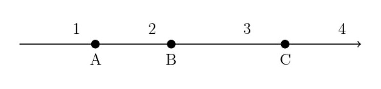

Inquiry
Take a moment to consider how different your life would be, if you did not have the ability to inquire. (Notice that in order to do this, you will need to engage in a bit of inquiry.) Without the ability to inquire, you surely would know much less about the world. Your life would be boring and uninteresting, at best.
We don’t live passive intellectual lives. We don’t relate to our evidence in the same way that pet goldfish relate to their food. We don’t float through life, absorbing the bits of evidence that happen to pass us by. We’re not “information filter-feeders” (J. Friedman forthcoming). We are more like sharks: we take action. If you need to know whether your neighbor is home or how to get to the airport, you inquire: you knock on doors and send text messages, or you ask your GPS system to show you the way. Inquiry is an indispensable part of daily life, and our lives would be drastically different—for the worse—without it.
Inquiry is a central topic across many philosophical traditions, though surprisingly it received only minimal attention in late twentieth century epistemology. This literature primarily analyzed epistemic states like justified belief or knowledge. Recently, however, scholarship in epistemology has undergone a “zetetic turn”, with many epistemologists now focusing on processes of inquiry that generate states like justified belief and knowledge. (The word “zetetic” comes from the Greek word “ζητητικός” (zētētikós) which means “proceeding by inquiry or investigation.”) Against the background of recent work in epistemology, the zetetic turn may seem like a historical outlier. However, questions about inquiry have been central throughout the history of philosophy. In this sense, it may be more accurate to describe the zetetic turn as a zetetic return towards questions that have continually animated philosophical theorizing.
Inquiry-focused epistemology, or “zetetic epistemology”, poses at least two types of questions about inquiry. First, there are questions about the nature of inquiry. For example, some have proposed that inquiry is a question-directed activity with a defining goal or constitutive aim, and that inquiry is intimately connected to a class of attitudes, like wonder or curiosity, which are directed towards questions. Second, and relatedly, there are questions about the norms of inquiry. For example, theorists have developed accounts of the proper conduct of inquiry. They have also discussed the relationship between norms of inquiry (or zetetic norms) and more traditional epistemic norms governing states like belief or knowledge.
This entry surveys historical perspectives on inquiry (Section 1), then introduces recent work on inquiry’s nature (Section 2) and norms (Section 3).
- 1. Historical Perspectives
- 2. The Nature of Inquiry
- 3. The Norms of Inquiry
- Bibliography
- Academic Tools
- Other Internet Resources
- Related Entries
1. Historical Perspectives
This section considers selected themes from historical discussions of the nature and norms of inquiry. Examining these themes will help to highlight continuity between recent discussions and historical projects, to show how historical discussions offer important insights and even propose novel solutions to ongoing debates, and to show how these discussions raise new questions about inquiry that may deserve future study.
1.1 Socratic Inquiry
Plato introduced at least two influential interventions in the study of inquiry. The first is a method of inquiry, the Socratic elenchus. Through careful questioning, Socrates brings his interlocutors to see that their initial beliefs are contradicted by a series of propositions to which they also assent. In addition to revealing inconsistencies (Benson 1995) and advancing the search for truth (Vlastos 1993), this method of questioning serves as a model for the process of philosophical inquiry (Hintikka 2007, Young 2006).
Second, Plato’s Meno raises the issue of the possibility of inquiry. If we do not know what we seek, the Meno asks, how can it be a subject of inquiry? And if we already know what we seek, what is the point of inquiry? Although many have been unpersuaded by the force of Meno’s paradox and by the solutions offered in this dialogue, theorists from Aristotle (1994) to Hintikka (2007) have engaged with Plato’s broader question of what kind of foreknowledge or cognitive preconditions must be satisfied for inquiry to be possible (Fine 2014). Others have broadened Plato’s descriptive question to ask after the normative conditions under which inquiry is appropriate (Willard-Kyle 2023a-b, Haziza 2023b, Falbo 2024).
1.2 Logic and Inquiry
Historically, the study of logic encompassed much of what is now regarded as the province of inquiry (Ballantyne 2019, Kneale and Kneale 1962). One of the most widely read early modern works of logic, the Port-Royal Logic, was originally titled Logic or the Art of Thinking (Arnauld and Nicole 1662) and contains an extensive discourse on method drawing heavily on Descartes’ own Discourse on Method (Descartes 1637) and Rules for the Direction of the Mind (Descartes 1628 [1701]).
As the domain of logic narrowed, the relationship between logic and inquiry became an open question. Theorists increasingly expressed doubts about the role of logic in inquiry. For example, Gilbert Harman (1986) distinguished principles of implication governing relations of entailment between propositions from maxims of reflection which “say what to consider before revising one’s view” and principles of revision which “concern the actual changes to be made.” Harman held that logic specifies principles of implication, as opposed to maxims of reflection or principles of revision.
Other theorists called for an enlargement of the logical tools for tackling questions about inquiry to include belief revision (Alchourrón et al. 1985), questioning (Belnap and Steel 1976, Hintikka 2001, Wiśniewski 1995, Ciardelli and Roelofsen 2011), and the management of research agendas (Olsson and Westlund 2006).
1.3 The Aim of Inquiry
We will see in Section 2 that many contemporary discussions take inquiry to be an activity with an aim and ask what the aim of that activity is. Questions about the aim of inquiry also attracted significant historical interest.
Charles Peirce proposed that inquiry aims at settled belief (Peirce 1877), a proposal taken up in later work by Isaac Levi (Levi 1980, 1991, 2012; Misak 1987). Sextus Empiricus (1933) held that inquiry aims at tranquility, which is achieved not by settling on any particular belief, but instead by coming to peace with inquiry’s unresolvability and suspending judgment (Mates 1996, Striker 2001, Vogt and Vlastis 2020). Descartes famously set the demanding aim of scientia, a type of certainty or indubitability (Descartes 1641, Pasnau 2013). Some have read Plato as suggesting the weaker claim that inquiry aims at knowledge (Beddor 2024, Millar 2011).
Another theme that emerges from historical discussions is the link between aims and settling (Loeb 1998). Many authors have held that the aim of inquiry should be coextensive with the conditions under which inquiry is settled. Most directly, Peirce defines inquiry as the struggle to attain belief occasioned by the irritation of doubt. Because belief removes the irritation of doubt, it settles inquiry and therefore, for Peirce, is inquiry’s sole aim (Peirce 1877, Kasser 2011). The view that belief settles inquiry persists today in the claim that belief is a settling attitude (Hieronymi 2009, Holton 2014, J. Friedman 2019a, Fraser 2026) and is contested by those who think that inquiry is settled under different conditions (Kvanvig 2003, Ballantyne 2019, Kelp 2021, Sapir and van Elswyk 2021, Falbo 2023a).
1.4 The Attitudes of Inquiry
We will see in Section 2 that many authors take inquiry to be intimately tied to a set of interrogative attitudes such as curiosity and suspension of judgment. On a strong version of this view (J. Friedman 2017), agents are held to be inquiring into a question just in case they hold an interrogative attitude toward the question.
Historical discussions likewise emphasized the characteristic roles that attitudes such as doubt and suspension of judgment play in inquiry, a question that also received interest from phenomenologists (Mulligan 2018). For Peirce (1877), inquiry begins with doubt. Doubt is psychologically uncomfortable, leading agents to inquire until belief is settled with the removal of doubt. Likewise, Cartesian inquiry builds upon a foundation of indubitable propositions in which no doubt is possible.
Others emphasized the role of suspension of judgment in inquiry. While contemporary theorists sometimes take suspension of judgment to be a stance held during inquiry (J. Friedman 2017), Sextus Empiricus (1933)—at least on some interpretations—held that inquiry ends in suspension as agents realize that further inquiry is pointless (Mates 1996; related views are defended in the more contemporary literature by Archer 2019, Wagner 2021).
1.5 Skepticism and Inquiry
Many figures have been concerned with the possibility of inquiring one’s way out of skepticism (Loeb 1998). Descartes (1641) aimed in the Meditations to show how this could be done by building on a foundation of clear and distinct perceptions. Hume’s Treatise of Human Nature (1739–40) argued that skeptical doubts could not be permanently dispelled, though they could be pushed aside in much of the conduct of life. Pyrrhonian skeptics held that skeptical doubts could not be dispelled and sought to achieve the tranquility that comes from recognizing the futility of further inquiry (Empiricus 1933). Attempts to reason directly away from skepticism continue to this day (Rinard 2019), and some theorists have drawn on insights from the study of inquiry to diagnose the errors in leading skeptical arguments (Kelp 2021).
2. The Nature of Inquiry
What is inquiry? This section explores debates about the nature of inquiry. Key issues include the object of inquiry (Section 2.1), the relationship between inquiry and questions (Sections 2.2–2.4), what it means for inquiry to have an aim or goal (Section 2.5), and the place of inquiring attitudes in defining inquiry (Section 2.6).
Metaphysical questions concerning the nature of inquiry are directly relevant to, and in many ways inextricable from, questions regarding the norms of inquiry, which will be covered in Section 3.
2.1 The Object of Inquiry
Inquiry takes place over an interval of time. Paradigmatically, it has a beginning, a middle, and an end. As we will see, philosophers disagree on how best to understand the stages of inquiry.
One popular view is that inquiry is an attempt to figure out the answer to a question. On this view, we might understand the process of inquiry as follows. Inquiry begins by opening or asking a question. Inquirers then actively investigate the question, perhaps by collecting evidence or deliberating on it. Finally, if all goes well, inquirers figure out the answer to the question and close inquiry (J. Friedman forthcoming).
Building on this view, questions are commonly taken to be the objects of inquiry. What we investigate or inquire into are questions. When inquirers engage in the goal-directed activity of inquiry they are, at least in part, attempting to answer a question (Hookway 2003, Schaffer 2005, Ross 2020a, Kelp 2021, Sapir and van Elswyk, 2021, Haziza 2023b, Guilielmo 2024, J. Friedman forthcoming).
Some theorists go further, viewing questioning not merely as a core part of the activity of inquiry, but also as central to epistemology in its entirety. Hintikka (1999, 2007) argues that all knowledge acquisition involves a process of questioning. Hookway (2003, 2006, 2008) argues that central epistemological concepts such as knowledge and justification should be analyzed in terms of their role in the regulation of inquiry, where inquiry is understood as a process of trying to “find a solution to a problem or an answer to a question” and where “questions are used to identify our cognitive goals.” Relatedly, with a focus on scientific research, Bromberger (1992) argues that science seeks to answer questions, and that scientific explanations are best understood as providing answering why-questions.
Beyond epistemology, some linguists and philosophers of language understand conversation as collective inquiry. For them, conversation aims to share and gain information about the world. Building upon Stalnaker’s (1978) approach to the informational structure of discourse, Roberts (2012) argues that conversation is organized around a set of interrelated questions, and that discourse contributions are evaluated as relevant or felicitous to the extent that they address or make progress on those questions.
2.2 Questions
What is a question? When considering this question—which has been dubbed the “question question” (Watson 2021)—it is important to distinguish between the content of a question (i.e., what is expressed by the utterance of a question), the speech act of asking a question, and the interrogative sentence (i.e., the locution or the literal written words, spoken sounds, or gestures). The word ‘question’ can refer to any of these three things (Bell 1975, Groenendijk and Stokhof 1984, Braun 2011).
2.2.1 Contents of Questions
Debates regarding the content of questions (see the entry on questions) matter for inquiry because they inform our understanding of when a question counts as being answered or fully resolved. As we will see (Section 2.5), many philosophers argue that answering a question is a necessary condition for achieving the aim of inquiry.
Some theorists reduce the contents of questions to the contents of certain sentences with which (they claim) interrogatives are synonymous. Interrogative sentences like “Does Alice sing?” may be synonymous with performative sentences like “I ask you whether Alice sings” (Lewis 1970) or imperative sentences like “Bring it about that I know whether Alice sings” (Åqvist 1975, Hintikka 1976). While there are several candidates for the contents of these latter sentences, Lewis and Åqvist and Hintikka treat their contents as propositions. This may have objectionable consequences, such as the implication that the contents of questions can be true or false (Braun 2019).
Other theorists identify the content of a question with the set of its “possible” or “direct” answers: the set of those propositions which provide enough (of the right kind of) information to settle the question, but no more information beyond that (Hamblin 1958, 1973, Karttunen 1977, Belnap 1981). For instance, the possible or direct answers to Is it raining? would be the propositions it is raining and It is not raining. The content of “Is it raining?” would be the set of those two propositions.
In an attempt to move beyond the notion of possible or direct answers, partitionism (Groenendijk and Stokhof 1982, 1984, 1989, 1992) treats the contents of questions as partitions of world space, understood as sets of mutually exclusive and jointly exhaustive sets of possible worlds. For instance, the question who runs? is a partition of world space whose elements consist in the sets of worlds where all the same people run. In one of those sets nobody runs, in another only Usain and Florence run, and so on.
When theorizing about the nature and norms of inquiry, many philosophers adopt partitionism as a working assumption (J. Friedman 2017, Habgood-Coote 2022, Willard-Kyle 2023b, Hubacher Haerle 2026b). However, some questions have contents that are hard to represent as partitions (Ciardelli 2017). Consider mention-some questions such as Where can I buy an Italian newspaper? (Groenendijk and Stokhof 1984, 155–156). Since these questions can be settled by non-exclusive non-exhaustive answers (e.g., You can buy a newspaper at Cafe Toscana), their contents are hard to represent as partitions. This concern, among others, is a core motivation for inquisitive semantics (Ciardelli, Groenendijk, and Roelofsen 2019).
Inquisitive semanticists identify the content of a question with its resolution conditions, the bodies of information that resolve the question. Resolution conditions are modeled as downward-closed sets of sets of possible worlds.
To illustrate, consider the set of possible worlds where you can buy an Italian newspaper at Café Toscana. This set provides just enough information to resolve the question Where can I buy an Italian newspaper?. Each of its proper subsets (for instance, the set of possible worlds where you can buy an Italian newspaper at Café Toscana while eating a bagel) provides more than enough information to resolve that question. Now, collect together all the sets of possible worlds that provide just enough information to resolve that question, as well as all of their subsets. This collection is the downward-closed set of sets of possible worlds that resolve the question at issue, and is the entity inquisitive semantics identifies with the content of that question. Since the elements of this kind of entity (i.e. the elements of downward-closed sets of sets of possible worlds) need not be exclusive or exhaustive, inquisitive semantics better represents mention-some questions than partitionism does.
Both partitionism and inquisitive semantics struggle with logical and mathematical questions like Does 2 + 3 equal 5? and Is modus ponens valid?. Since every set of worlds provides enough information to resolve these questions, they turn out to have the same complete answers and resolution conditions and, therefore, the same content. Partitionism and inquisitive semantics may thus make the contents of questions problematically coarse-grained.
This problem motivates some theorists to treat the contents of questions not as sets built from possible worlds, but rather as structured entities built from objects, properties, and relations (Braun 2019). Other theorists retain coarse-grained accounts of question-contents and theorize about how inquiry, including inquiry involving logical and mathematical questions, might nonetheless rationally proceed (Rosa 2024, Hoek 2025).
2.2.2. Question-Asking
If you want to figure out the answer to a question, it’s often a good idea to ask the question. This speech act of question-asking is highly relevant to our practices of inquiry.
Some theorists define question asking in terms of other speech acts, such as commanding or requesting that the addressee provide the asker knowledge or information (Åqvist 1975, Belnap 1969b, Searle 1969, Bell 1975), or proposing to adopt shared intentions to find an answer (Habgood-Coote 2026) or to coordinate publicly on the resolution of an issue (Rawlins 2024). Since these theories define questioning in terms of other speech acts, they can be deepened by further defining those other speech acts. For example, Schiffer (1972) defines questioning in terms of requesting, and defines requesting in terms of the mental states via which people engage in requesting. Alternatively, Bach and Harnish (1979) define questioning directly in terms of the mental states speakers express through questioning, without appeal to other speech acts. For them, an act counts as questioning when it expresses the desire to be told the question’s answer and the intention that the hearer tell the speaker this answer because of this desire.
A related but distinct approach theorizes questioning using normative notions such as the concepts of rules and obligations. Consider rules banning asking a question when you already know its answer, or when you don’t want to be told that answer. Some theorists argue that to be an act of questioning (or of a certain species of questioning) just is to be governed by these kinds of rules, so that it is in some sense wrong or infelicitous to perform the act in violation of them (Searle 1969, Whitcomb 2017). A further approach theorizes questioning in terms of obligations and permissions. On this approach, what makes an act count as questioning includes features such as generating obligations for the asker to obtain an answer, or for the addressee to provide one (Millson and Risjord 2026).
Finally, there are “anti-theories” of questioning, according to which the different varieties of questioning are too disunified to possess a shared nature (Cappelen 2011). Levinson (1979/1992, 80-98), inspired by Wittgenstein (1958, §1.24), argues that acts of questioning have no substantial unity because “the nature of questions can vary in relation to the particular language games in which they play a role”. Related concerns about the heterogeneity of questioning have motivated various contemporary views (see e.g., Rawlins 2024, Habgood-Coote 2026).
While the speech act of question asking is highly relevant to our practices of inquiry, it is important to stress two complications. First, not all instances of question-asking are instances of inquiry. For example, we can ask rhetorical questions (Is the pope Catholic?) without inquiring, or we might ask a question merely to be polite or to make small talk (How are you?). Similarly, a teacher might ask a student a question (If I have two apples and take away one apple, then how many apples do I have?) without inquiring into that question.
Second, the object of our inquiry may not be identical to the question we ask aloud. For example, the previously mentioned teacher may be inquiring into the question Does the student know the answer?. More generally, the question that we explicitly ask and the question that we are inquiring into often come apart.
2.2.3 Interrogative Presupposition
Another central concept is interrogative presupposition. Presuppositions are closely related to possible or direct answers, and to whether a question has a true answer in the first place. These notions, in turn, are central to debates regarding when a question counts as a proper object of inquiry.
Broadly speaking, we can understand presuppositions as the background information which is taken for granted in questioning. For instance, Is the present King of France bald? presupposes that there presently is a king of France, and Why did Russell quit smoking? presupposes that Russell quit smoking.
A popular analysis of interrogative presupposition comes from erotetic logic, the logic of questions and answers. In erotetic logic, a question Q presupposes the propositions which are true if any direct answer to Q is true (Belnap and Steel 1976). For example, the question Is the present King of France bald? presupposes that there is a present king of France because the direct answers to this question are the propositions the present king of France is bald and the present king of France is not bald. It is only possible for one of these propositions to be true if there is indeed a present King of France.
Some questions – like Why did Russell quit smoking? – have false presuppositions, and therefore lack true direct answers. There is no reason why Russell quit smoking, because he didn’t. Some have argued that questions with false (or otherwise faulty) presuppositions “do not arise” (Geach 1950, 84–86) or that it would be “silly” (Tichý 1978, 278) or “foolish” (Belnap 1969b, 36) to ask such questions, with some going as far as to call them “nonsense questions” (Collingwood 1940, 26).
Questions with false presuppositions can be met with corrective answers, which reject their presuppositions. For example, you may say, “There is no present king of France” (Hiz 1962, Belnap and Steel 1976, van Fraassen 1980). However, corrective answers are not direct answers. Some theorists have argued that they are not even answers, and that assertions of them should be thought of as mere replies that reject the question (Groenendijk and Stokhof 1984).
Interrogative presupposition has been central to several ongoing debates in the epistemology of inquiry. Some philosophers argue that one ought not inquire into a question if it has a false presupposition—that is, if it lacks a true answer (Willard-Kyle 2026,, Willard-Kyle 2023b, Willard-Kyle et al. 2026, Deigan 2025a, Rosa 2024 and 2025)—while others have resisted this (Falbo 2024, Hubacher Haerle 2026). We explore these proposals in Section 3.
2.3 Inquiry beyond the Question-Answer Model
Do all inquiries involve attempting to resolve a question? There are various challenges to the view that inquiry always involves attempting to resolve a question.
First, some inquiries may aim at understanding. For example, inquiry into general phenomena such as the life of Napoleon may attempt not to resolve particular questions about Napoleon, but rather to understand the life of Napoleon (Kelp 2018). Relatedly, some inquiries may aim at understanding through shaping interpretive frames that structure and organize information (El Shazly 2025). For instance, hermeneutical inquiries are not directed towards answering a question (Sliwa 2024). Rather, the goal of such inquiries is to find a correct or apt perspective on a situation, especially as it involves morally complex experiences.
Second, sometimes the aim of inquiry may be partly contained in the inquiry itself. For example, in interpersonal inquiry inquirers learn more about others through conversation. Dover (2022) argues that interpersonal inquiry is autotelic —that is, it is valued for its own sake and its purpose is not to figure out the answer to some specific question. Relatedly, sometimes inquiries may be guided by erotic curiosity (Dover 2023). Erotic curiosity is directed not at questions but rather at objects, such as the beloved or Shakespeare. Inquiries driven by erotic curiosity may seek ongoing connection and engagement with the object of inquiry—the point is for inquiry to continue on, not to end. In response to these views, Vazard (2026) argues that it is not a kind of curiosity but instead interest which drives us to attend to objects (like the beloved or Shakespeare) in the ways Dover describes.
Third, sometimes inquirers may not yet have settled on a particular question. Instead, they may be in a more inchoate state in which a question is not yet fully grasped (Inan 2010, Henne 2023, 2026). Hurley (2024) argues that when inquirers are in this state they should attempt, not to resolve their questions, but rather to clarify them. Relatedly, Henne (2026) distinguishes between two kinds of inquiries that don’t strictly aim at question resolution: indefinite inquiries, which do not start with a well-defined question, but instead by inquiring one works towards refining and articulating a definite question, and framing inquiries, which seek to delineate, revise, or expand upon a conceptual framework.
2.4 The Possibility of Non-deliberate Inquiry
Contemporary discussions often focus on conscious and deliberate inquiry. For example, they center cases like the self-aware detective who actively investigates a question at the forefront of their mind (J. Friedman 2019a). Some theorists even suggest that inquiry is necessarily conscious or deliberate. For example, Baehr (2011: 18) defines inquiry as “the active and intentional search for the truth about some question”, and Arpaly (2023: 24) emphasizes that inquiry is a voluntary and deliberate action—that it is something you do, not something that happens to you.
By contrast, Siegel (2025) distinguishes “high” inquiries which are conscious and deliberately directed from “low” inquiries, which are not. Siegel uses mind-wandering to illustrate low inquiry. For example, while taking a shower we might have a spontaneous and unbidden burst of insight—a “shower thought” (Irving et al. 2024). In these cases we might not have a specific question in conscious view, yet Siegel argues that our inquiry advances forward.
The possibility of low inquiry raises important questions. For instance, we might distinguish between two types of learning. In active learning, agents take deliberate steps to learn the answer to a question, such as conducting an experiment. In passive learning, agents learn information inadvertently, for example, through immediate perception or unsolicited testimony (Herschel 1831, Kelp 2021, J. Friedman forthcoming). Nearly all of the examples in the contemporary literature on inquiry make it active. However, cases of low inquiry invite the possibility that inquiry may also encompass some cases of passive inquiry.
2.5 Aims of Inquiry
Many authors hold that inquiry has an aim, but there is much dispute regarding the aim of inquiry. Does inquiry have one aim, or many aims? What, specifically, is the aim or aims of inquiry? And what does it mean to say that inquiry has an aim?
2.5.1 Candidate Aims
Monists hold that inquiry has a single epistemic aim. Candidates for this aim include truth; significant or important truth (Haack 1993, Kitcher 2001, Lynch 2004); knowledge (Sartwell 1991, 1992; Kappel 2010; Whitcomb 2010, 2017; Rysiew 2012; Kelp 2014, 2020, 2021; Sapir and van Elswyk 2021; Haziza 2023a; Carter and Hawthorne 2024); knowing that you know (Millar 2011); occurrent knowledge (Flamini 2025); understanding (Elgin 2017); justified belief (Davidson 2005); and maximizing the epistemic value of your credences (Beddor 2024).
A popular monist view is that inquiry aims at knowledge. Some theorists challenge this view by arguing that it can be rational to inquire into a question despite already knowing its answer. For example, imagine someone who has the name of a song on the tip of their tongue—they know the name of the song—but they just can’t bring it to mind at the moment. This person might reasonably inquire, by deliberating or seeking out further evidence, despite already knowing the answer (Archer 2018, Smith 2025). Another challenge to the knowledge aim of inquiry comes from cases of double-checking (Falbo 2021, 2023; Millson 2021; Palmira 2024; Woodard 2024). For example, consider a surgeon who already knows that their patient’s left kidney needs to be removed but nonetheless seeks confirmation of their answer, in order to gain additional forms of epistemic improvement such as a higher degree of rational confidence or certainty (Brown 2008, 2025; Falbo 2023a).
A more pluralistic strategy accepts that inquiry has a unique aim while taking this aim to come in multiple forms. For example, we might take inquiry to aim at epistemic improvement and take epistemic improvement to encompass multiple outcomes including true belief, knowledge, certainty, and understanding (Archer 2021, 2024; Falbo 2021, 2023a, 2024; Willard-Kyle 2023a; Logins 2024; Palmira 2024; Woodard 2024; Matheson and DiPaolo 2026). Epistemic improvements may even include non-propositional outcomes, such as phenomenally grasping what it is like to see red (McSweeney 2023, forthcoming), adopting a gestalt, framing or apt “perspective” on a situation (Sliwa 2024), cultivating a “sense-making frame” to organize information (El Shazly 2025), identifying false beliefs (Falbo 2024), or clarifying questions (Hurley 2024). Notably, on this understanding, the aim of inquiry need not, and should not, be understood solely in terms of coming to gain the answer to a question.
2.5.2 What Does It Mean to Say that Inquiry Has an Aim?
One interpretation of what it means for inquiry to have an aim is that inquiry has a constitutive aim. On this view, the aim at issue is in some sense part of inquiry’s nature and thereby definitive of it (Smith 2020). Constitutivism is often motivated through an analogy to games. Just as chess aims at checking-mating one’s opponent, so too, on this view, inquiry aims at answering a question or gaining knowledge of the answer (Kelp 2020, 2021; González de Prado 2024; Palmira 2024). In both cases (chess and inquiry), the aim at issue defines the phenomenon, at least in part. One development of this view, inspired by Strawson (1992), attempts to explain and understand knowledge and belief in terms of their role in inquiry, for example, by understanding knowledge in terms of its being a “move in inquiry”, namely the move of properly closing inquiry (Kelp 2020, 2021).
On a different interpretation, to speak of the aim of inquiry is to say that inquirers have aims which guide them in their inquiries. These kinds of aims would be psychological states consisting, for instance, in desires on the part of the inquirer that they learn or know or understand the answer to a question, or that others (such as their research community) obtain these outcomes (Beddor and Dellsén 2025).
For those who theorize about the aims of inquiry in terms of psychological states—and for many other theorists of inquiry—an additional question looms large: what is it to know the answer to a question, or even just to answer a question? Answering, and knowing-the-answer, plausibly require not only accepting some proposition that is in fact an answer to the question at issue, but also (among other things) recognizing that answer as such, and believing it because of that recognition. These latter phenomena call for further theorizing (Schaffer 2007, Clark 2026, Peacocke 2026).
2.5.3 Achieving the Aim of Inquiry
When do inquiries (or inquirers) achieve their aims? Some inquiries may fail because inquirers give up on them or are prevented from inquiring further. In other cases, the aim of inquiry may be achieved, but not through inquiry. For example, you may be investigating whether there are snacks in the kitchen and be told by your roommate, just as you get up to check, that they ate all the snacks. In this case, you resolve your focal question by learning whether there are any snacks in the kitchen, but you do not resolve the question through inquiry.
Other ways of achieving the aim of inquiry may likewise raise challenges. Consider a biologist studying a microecosystem (Carr 2025). She wants to know how the microecosystem will change over time. One way to do this would be to observe the microecosystem. Another would be to burn it all down. Burning down the ecosystem would produce highly accurate beliefs about the future evolution of the ecosystem. Nonetheless, burning down the ecosystem seems a problematic way of fulfilling your goals as an inquirer. One lesson we might draw from this is that inquiry aims at discovering rather than creating truths (Carr 2025).
More generally, we might propose that inquiry has a mind-to-world direction of fit (Carr 2025, 183). These kinds of cases cast doubt on the idea that the aim of inquiry is achieved by coming to have (to know, to believe, to improve your epistemic position on, etc) a true answer to your question. Indeed, we might question whether acts of “creating truths”, such as lighting the microecosystem on fire, are even instances of inquiry at all. Zhang (2026) argues that the activity of answering a question counts as an act of inquiry only if the inquirer attempts to come to know the answer without intentionally causing the answer to be true.
It is commonly taken for granted that the aim of inquiry is achieved when an individual inquirer obtains some epistemic state—for example, when the inquirer comes to know the answer to their question. Using a range of examples from the sociology of science, Beddor and Dellsén (2025) expand upon this idea, and argue that in an important range of cases, the aim of inquiry is only achieved when individuals other than, or beyond, the specific inquirer come to have relevant knowledge or epistemic states regarding the result of inquiry. This more inclusive interpretation of what is required to achieve the aim of inquiry may require that, for example, the scientific community more generally, or in the long run, comes to have public access to the results of a longitudinal study.
Some theorists doubt that inquiry has an aim. For instance, J. Friedman (2024) argues that no aim of inquiry can be grounded in the psychological states of inquirers (since those states are too heterogeneous), nor can there be a single constitutive aim “baked in” to the act of inquiry itself. In this way, she argues that inquiry is unlike chess or other games with highly conventionalized rules, which come to have their aims artificially via game designers. Inquiry is a much more natural social practice. On Friedman’s preferred view, we should adopt a form of quietism about the aim of inquiry, which requires that we theorize about the norms of inquiry directly, without having to proceed via some single unified or teleological aim.
2.6 Attitudes in Inquiry
Many theorists hold that a person counts as inquiring only if they possess certain kinds of mental states such as doubt (Peirce 1877), intentions to answer questions (D. Friedman 2025a), or indeed aims—understood as psychological states such as desires—to resolve or improve their epistemic position on some question (Falbo 2023a). For example, J. Friedman (2017, 2019a) argues that a person counts as inquiring just in case they possess an interrogative attitude like curiosity or wonder, and that suspension of judgement is the most general of these attitudes (in the sense that it, uniquely, is an attitude you hold if you hold any interrogative attitude). On this view, an agent is inquiring into a question if and only if she suspends judgment on that question (for discussion see Archer 2018, 2024; Falbo 2021, 2023; Woodard 2021; D. Friedman 2025a; and Gaultier 2026).
Many interrogative attitudes have been the subject of detailed study in their own right. Consider curiosity. Psychologists and neuroscientists often view curiosity as a desire to obtain epistemic outcomes such as knowledge or belief (for discussion see Carruthers 2026), as do many philosophers (Goldman 1999, Williamson 2000, Nagel 2024). On a natural interpretation of these views, being curious about what time it is amounts to having a desire that one know, or perhaps believe, the answer to the question of what time it is. On this approach, curiosity is a meta-cognitive desire—it is a desire for knowledge or learning or some other form of epistemic gain.
One problem with these views is that they make it difficult to explain how beings who lack the concepts of belief or knowledge (e.g. certain nonhuman animals and perhaps young human children) can have interrogative attitudes, like curiosity. Relatedly, Carruthers (2018) discusses cases of curiosity among creatures who lack meta-cognitive capacities, including invertebrates like bees who exhibit curiosity, or at least curiosity-like exploratory behaviors. In light of these concerns, some theorists have denied that the content of curiosity involves concepts like knows or believes and held that the content of curiosity is not a proposition (which includes these concepts) but instead a question.
According to question-directed views, when you are curious about what time it is, the content of your mental state is the question of what time it is (Whitcomb 2010, J. Friedman 2013, Ciardelli and Roelofsen 2015, Carruthers 2018, Mulligan 2018, Smith 2025, Teague 2025). While the nature of question-contents is controversial (see Section 2.2.1), they differ from propositions at least in that they cannot be true or false: while propositions have truth values, question-contents have answers. Whatever these entities are, though, it is controversial to claim that curiosity, or inquiring attitudes more generally, always have them as their contents (Dover 2023; Falbo 2021, 2023a; Haziza 2024; Carruthers 2026).
Focusing on wonder rather than curiosity, Deigan (2025b) argues that wonder is a kind of desire for knowledge, and Teague (2025) argues that wonder at least requires having certain desires. Carruthers (2018) argues that curiosity is merely desire-like, and Morton (2009) construes it as an emotion. In contrast, Drucker (2022) argues that wondering is not a desire or any other attitude, but instead is an activity or process. That is, it is something we do as opposed to a state we have. A related position is defended by Zurn and Bassett (2022), who argue that curiosity is not a state or desire but a dynamic process which involves connection and moving through networks of interrelated ideas. In any case, curiosity is widely taken to be ubiquitous in the natural world, both among humans and non-humans (Carruthers 2018, Nagel 2024).
A related literature describes belief-like attitudes which are taken to have various important roles in inquiry. These include inclination (Barnett 2019, 2024), endorsement (Fleisher 2018), hypothesis (Palmira 2023), speculation (Goldberg 2013), and transitional attitudes (Staffel 2018, 2023, 2025). One important application of these attitudes is to inquiries into cutting edge and controversial topics in fields like science or philosophy. For example, Barnett (2019) argues that a belief-like attitude of inclination, an attitude which is insulated from higher-order evidence from disagreement, can promote the sincere defense of one’s philosophical views, especially in cases of deep controversy where outright belief seems irrational (though see Jackson forthcoming for an opposing view). Similarly, Staffel (2023, 2025) argues that the rational stance towards our philosophical views is a transitional attitude, a type of preliminary attitude adopted during ongoing deliberation. Adopting a weaker belief-like stance towards one’s preferred position or theory has also been taken to support beneficial forms of cognitive diversity among practitioners within a research domain (Kitcher 1993, Fleisher 2018, Barnett 2019).
3. The Norms of Inquiry
This section surveys normative topics involving inquiry, including the relationship between inquiry and epistemic normativity (Section 3.1); general frameworks designed to theorize about the normativity of inquiry (Section 3.2); and specific normative principles about individual inquiry and interrogative attitudes, evidence, and groups (Section 3.3).
3.1 Metaepistemology
The zetetic return raises at least two questions about what it means to study inquiry. The first concerns the type of norms governing inquiry. Many have argued that some norms of inquiry should be regarded as epistemic (J. Friedman 2020, Kelp 2021, Flores and Woodard 2023), instrumentalist (Rosa 2024, Steglich-Petersen 2024), or consequentialist (Thorstad 2024) norms. Pluralists (Flores and Woodard 2023) argue that norms of inquiry may come in several types, rendering many of the above proposals potentially compatible.
A second question concerns the relationship between norms of inquiry and traditional epistemic norms. Plausible norms of inquiry seem to forbid the formation of beliefs licensed by traditional epistemic norms, such as evidentially supported beliefs that would distract attention from ongoing inquiries. For example, if you are trying to figure out how many windows the Chrysler Building has, then, at some point or other, you must focus your attention on counting the windows and ignore evidence that is irrelevant to your inquiry (J. Friedman 2020)—even if, were you to get distracted and come to have beliefs based upon your inquiry-irrelevant evidence (e.g., the belief that the person who just walked by has blue hair), your beliefs would be justified according to standard evidentialist norms (Feldman 2000, Conee and Feldman 2004). Plausible norms of inquiry likewise seem to permit the formation of beliefs forbidden by traditional epistemic norms, for example because they examine some but not all of the relevant evidence held in memory, thereby running a small risk of forming evidentially unsupported beliefs (Thorstad 2025). This raises the question of whether there is a genuine tension between norms of inquiry and traditional epistemic norms. Some theorists argue that there is no tension here (Falbo 2023b, Dutant et al. 2025, Kahn 2026). Others accept that there is some kind of tension and react by revising epistemic norms (J. Friedman 2020, Haziza 2023d), revising norms of inquiry (Domínguez 2023), or aiming to accommodate the tension without normative revision (Thorstad 2021).
Some theorists propose to deliver a unified answer to both questions by denying that norms of inquiry are epistemic norms (Falbo 2023b, D. Friedman 2025a, Kauppinen 2026). On this approach, tension between epistemic norms governing belief and non-epistemic norms governing inquiry is no more surprising or under-theorized than any other tension between epistemic and non-epistemic norms. Others aim to deliver a unified answer to both questions by taking epistemic and non-epistemic norms to form a unified class of norms, such as instrumental norms (Steglich-Petersen 2024) or the norms internal to social practices (Fleisher 2025), and denying that this class exhibits internal tension.
3.2 Theoretical Frameworks
Several theoretical traditions speak directly to the norms governing inquiry. This section surveys two such traditions: (i) virtue epistemology, which studies intellectual virtues and vices related to the success of inquiry, and (ii) regulative epistemology, which aims to provide actionable guidance for inquirers. It also outlines a Kantian-inspired framework for evaluating inquiry, and a general model for theorizing about the norms of inquiry as they apply to various stages of inquiry.
Most work in the virtue epistemology of inquiry comes from the responsibilist tradition. Responsibilist virtue epistemologists identify epistemic virtues with character traits such as inquisitiveness, attentiveness, and open-mindedness. Theories of virtuous character traits include detailed proposals for how virtuous agents initiate, conclude, and pursue their inquiries. Virtues such as curiosity (Ross 2020b), inquisitiveness (Baehr 2011, Watson 2015), and intellectual perseverance (Battaly 2017, King 2014) have been linked to the proper initiation of inquiry. Intellectual perseverance has also been linked to the proper conclusion of inquiry (Battaly 2017, King 2014). Virtue epistemologists also discuss the virtuous pursuit of component activities of inquiry, including selecting questions (Battaly 2018), identifying subquestions (Hookway 2003), gathering evidence (Baehr 2009), attributing trustworthiness to our interlocutors (Fricker 2007), and following arguments where they lead (Kelly 2011). Especially central in these discussions (for the purposes of theorists of inquiry) is the work of Hookway (2003, 2006, 2008), which argues at length that inquiry should be the focal point of epistemological theorizing and that it should be approached from a virtue-theoretic point of view.
An alternative virtue reliabilist tradition identifies epistemic virtues with reliable faculties such as vision or memory. In this tradition, Sosa (2007, 2009, 2021) influentially understands epistemic normativity as a kind of performance normativity. We can evaluate an archer’s performance for accuracy (hitting the target), adroitness (deploying the archer’s competence or skill), and aptness (hitting the target because of the archer’s skill). For Sosa, we can likewise view beliefs as performances to be assessed for accuracy (when true), adroitness (when deploying reliable faculties) and aptness (when true because of the deployment of reliable faculties). Sosa analyzes knowledge as apt belief, and also argues that there is a second branch of epistemology in addition to the theory of knowledge: intellectual ethics. Intellectual ethics involves “evaluation and norms pertinent to intellectual matters generally” (Sosa 2007, 89), including many matters involved with inquiry (such as the matter of whether one’s beliefs are trivial or significant). Several theorists have drawn upon this broad framework to evaluate zetetic conduct (Navarro and Pino 2024, Carter and Willard-Kyle 2025, Fleisher 2025).
A further framework (often overlapping with virtue epistemology) is regulative epistemology (Goldman 1978, Bishop and Trout 2005, Roberts and Wood 2007, Ballantyne 2019). Regulative epistemology aims to guide intellectual practices, including practices of inquiry, by providing actionable advice for inquirers, especially in light of their cognitive biases or other limitations. This guidance differs from analysis (the attempt to delineate the nature of some phenomenon such as knowledge; see the entry on the analysis of knowledge) and from evaluation (the attempt to adjudicate whether some phenomenon possesses some evaluative feature such as rationality).
Unlike analysis and evaluation, guidance is in the business of telling us what to do in an implementable, followable way (Steinberger 2019). Guidance thus aims to provide useful tools and methods for inquirers. These tools and methods include algorithms (Bishop and Trout 2005), case studies of virtuous exemplars (Roberts and Wood 2007), mental “pictures”—images and metaphors—to integrate into our thinking (Ballantyne 2019), and snappy sayings to internalize—such as the saying “Causal arguments have holes if they don’t have controls” (Bishop et al. 2026.
An alternative Kantian-inspired framework comes from Rescher (1981, 2000), who models inquiry using erotetic logic (other relevant work in erotetic logic includes Ciardelli and Roelofsen 2015 and Wiśniewski 2021). In Rescher’s framework, questions are modeled as sets of direct answers. We should ask questions whose presuppositions are secured (that is, entailed) by our knowledge. These questions should probe, among other things, the issue of what explains the truth of the things we know. After answering our questions, we should repeat the cycle, rebuilding our question-sets to include new questions whose presuppositions are secured by newly acquired knowledge and exclude old questions whose presuppositions are no longer secured. Proper inquiry is then a repeated process of learning (among other things) the explanations of the things we know.
Another theoretical framework on offer is from J. Friedman (forthcoming), who gives us a simplified model of inquiry as a line divided into intervals separated by points:

The line as a whole represents the process of inquiry. The points represent: (A) putting the question on your research agenda by, for example, wondering about or becoming curious about the question; (B) beginning to actively investigate that question by, for example, collective evidence or engaging in deliberation; and (C) closing or settling the question by, for example, coming to know or believe its answer. Before, after, and in between these points there are intervals of time. These include: (1) the time when a question is not yet on one’s research agenda, (2) the time when a question is on one’s research agenda but one has not yet begun to actively investigate it, (3) the time when one is actively investigating a question, and (4) the time when the question is settled or closed.
For each of the line’s points and intervals, we can ask normative questions about it. For example, we can ask (about interval 1) whether it is ever a mistake to not (yet) have a question on your research agenda. We can also ask when you should move between stages. For example, we can ask when you should stop actively investigating a question by settling your inquiry (moving from B to C).
Of course, inquiry need not proceed in a unidirectional or uninterrupted way. The line model accommodates that fact. For example, you might re-open a closed inquiry (reverting from C to B). Alternatively, you might abandon an inquiry during interval 3, never making it to C. The line model provides a theoretical scaffolding for asking normative questions about these kinds of activities.
3.3 Particular Principles
Many theorists argue for particular principles or norms involving inquiry. Sometimes these principles apply to inquiry per se; other times they apply to closely related phenomena like interrogative attitudes or question-asking. These principles differ along several dimensions. Below we survey some of these differences.
3.3.1 Normative Principles for Interrogative Attitudes, Inquiry, and Question-asking
One dimension of variation concerns the target of norms: do they govern inquiry, interrogative attitudes (IAs), or the speech act of question-asking? To illustrate, consider three ways to formulate an ignorance norm:
Ignorance Norm for Inquiry: For all agents S, times t, and questions Q, it is irrational for S to: inquire into Q at t while knowing the answer to Q at t. (J. Friedman 2017)
Ignorance Norm for IAs: For all agents S, times t, and questions Q, it is irrational for S to: have an interrogative attitude towards Q at t while knowing the answer to Q at t. (Whitcomb 2010, J. Friedman 2017, Millson 2020, Sapir and van Elswyk 2021, Willard-Kyle 2023a, Meylan 2025)
Ignorance Norm for Asking: For all agents S, and times t, and question Q, S should not: ask Q at t while knowing the answer to Q at t. (Searle 1969, Hawthorne 2004, Fitzpatrick 2005, Whitcomb 2017)
The first norm prohibits agents from inquiring into questions whose answers they know, whereas the second prohibits interrogative attitudes such as curiosity, and the third forbids the asking of questions whose answers one already knows. Notably, the first two norms are equivalent if, as J. Friedman (2017) argues, inquiring is necessarily coextensive with having an interrogative attitude:
Inquiry–IA Link: For all agents S, times t, and questions Q, S is inquiring into Q at t iff S holds an interrogative attitude towards Q at t.
By contrast, those who deny Inquiry-IA Link (Falbo 2021, 2023a; D. Friedman 2025a) more sharply distinguish norms governing inquiry from norms governing interrogative attitudes.
Meanwhile, Ignorance Norm for Asking applies only to the speech act of asking—and more specifically, at least in the work of the authors who have developed its details thus far—only to certain kinds of asking. Other normative principles involving asking have been explored as well. For example, it has been argued that we should ask someone a question only if we have reason to believe that they know its answer (Sorensen 1981), or only if they do know its answer (Schaffer 2006, Haziza 2023c). Theorists have also explored interrogative analogues of Gricean conversational maxims (see the entry on pragmatics): analogues of those maxims which govern, not assertions, but askings (Braun 2011).
A second dimension concerns the epistemic modality in which norms are formulated. Norms can be formulated using modalities such as belief (J. Friedman 2019a, Fraser 2026), knowledge (Rescher 2000, Sapir and van Elswyk 2021), understanding (El Shazly 2025), epistemic improvement (Archer 2021; Falbo 2023a, 2024), and being sure (Goodman and Holguín 2023). For example:
Ignorance Norm for Inquiry: For all agents S, times t, and questions Q, it is irrational for S to: inquire into Q at t while knowing the answer to Q at t.
Don’t Believe and Inquire: For all agents S, times t, and questions Q, it is irrational for S to: inquire into Q at t while believing an answer to Q at t.
Epistemic Improvement: For all agents S, and times t, and questions Q, it is impermissible for S to: inquire into Q at t while it is rational for S to be sure at t that they won’t, by inquiring, improve epistemically upon Q. (Falbo 2024)
For some theorists, the relevant epistemic modality is tied to views about the aim of inquiry or the conditions under which inquiry involves incoherence or structural irrationality.
A third dimension concerns the question-related object that these norms involve. For example, some norms involve answers to questions (Rescher 2000, Hawthorne 2004, Fitzpatrick 2005, Whitcomb 2010, J. Friedman 2017, Sapir and van Elswyk 2021, Hubacher Haerle 2023, Sorensen 2024, Deigan 2025a, Willard-Kyle et al. 2026), whereas others involve presuppositions of questions (van Fraassen 1980, Rescher 2000, Braun 2011, Borge 2013, J. Friedman 2017, Rosa 2024, Rosa 2025, Carter and Willard-Kyle 2025, Willard-Kyle et al. 2026):
Ignorance Norm for Inquiry: For all agents S, times t and questions Q, it is irrational for S to: inquire into Q at t while knowing the answer to Q at t.
Knowledge Norm for Inquiry: For all agents S, times t and questions Q, it is irrational for S to: inquire into Q at t while failing to know one or more of Q’s presuppositions. (Willard-Kyle 2023a)
Norms like Knowledge Norm for Inquiry harken back to familiar discussions from twentieth century philosophy, where it was often asserted that certain questions “do not arise” because they have faulty presuppositions (Collingwood 1940, 26; Strawson 1950, 330, 343–344; Strawson 1952, 18, 173–174; Geach 1950; Austin 1962, 50–51, 136–137; Belnap 1969a; Bromberger 1971; Sellars 1981/2007, 285; Wiśniewski 1991).
A fourth dimension concerns the normative modality in which norms are expressed. For example:
Rational Ignorance Norm for Inquiry: For all agents S, times t and questions Q, it is irrational for S to: inquire into Q at t while knowing the answer to Q at t.
Deontic Ignorance Norm for Inquiry: For all agents S, times t and questions Q, S should not: inquire into Q at t while knowing the answer to Q at t. (Fantl and McGrath 2009)
Similarly, many of these modalities could be changed from requirements to permissions (Goldstein 2026), or to the status of being “in a position to” do something such as close one’s inquiry (Schaffer 2006, 95), or—less committally—to the status of being “defective or suboptimal or inappropriate” (J. Friedman 2019a, 303).
A fifth dimension concerns positive and negative norms. Negative norms forbid agents from doing something, such as inquiring, whereas positive norms require agents to do something. While many proposed norms of inquiry are negative, some are positive. For example:
Disjunction Distribution Norm (Narrow Scope): For all agents S, times t, and propositions P and R: If at t S is wondering about the question of whether P or R, then at t S should also be wondering about whether P, or wondering about whether R, or wondering about both. (J. Friedman forthcoming).
This norm requires agents to wonder about at least one disjunct of any disjunctive question they wonder about.
The distinction between positive and negative norms often overlaps a sixth dimension of variation: the scope of norms (see the entry on structural rationality). Narrow scope norms feature deontic operators that take narrower scope than some other operators, as in the stylized requirement: if A, ought(not B). Wide scope norms give deontic operators wider scope, as in the stylized requirement: ought(if A, not B).
We can often study wide scope counterparts to narrow scope norms, such as:
Disjunction Distribution Norm (Wide Scope): For all agents S, times t, and propositions P and R: it should be that [if at t S is wondering about the question of whether P or R, then at t S is wondering about whether P, or wondering about whether R, or wondering about both].
One reason why many theorists prefer wide scope norms is that they avoid detachment of unconditional obligations (Broome 1999). For example, suppose you are (but should not be) wondering about the disjunctive question of whether kicking puppies is fun or kicking kittens is fun. It follows from Disjunction Distribution Norm (Narrow Scope) that you should be wondering about at least one of the question’s disjuncts: you should be wondering about whether kicking puppies is fun, or wondering about whether kicking kittens is fun, or wondering about both. This unhappy result is avoided by Disjunction Distribution Norm (Wide Scope), which tells us only that those who are wondering about a disjunctive question should either be wondering about at least one of its disjuncts or not be wondering about the overall question in the first place. While Disjunction Distribution Norm (Wide Scope) has not been discussed in the literature on inquiry, other wide-scope positive norms have been (Whitcomb and Millson 2024).
Beyond these dimensions of variation, some authors apply general principles of rationality such as instrumentalism (Steglich-Petersen 2024) and consequentialism (Thorstad 2024) to the special case of inquiry. For example:
Zetetic Instrumental Principle: If one wants to figure out the answer to Q, then one ought to take the necessary means to figuring out the answer. (J. Friedman 2020)
General Instrumental Transmission: If there is reason for one to pursue A, and there is positive probability conditional on one’s φ-ing, that one’s φ-ing helps bring about A, then that is a reason for one to φ, the strength of which depends on the reason for one to pursue A and the probability. (Steglich-Petersen 2024).
As mentioned above, many such norms back up against important debates involving the distinction between wide- and narrow-scope norms. They also back up against related debates about the proper formulation of transmission principles (González de Prado 2024, Steglich-Petersen 2024) and the relationship between consequentialism and instrumentalism (Kelly 2003, Berker 2013, Falbo 2023b, Thorstad 2024).
Another tradition bars inquiry into trivialities (Harman 1986; Baril 2010; Grimm 2011; Treanor 2014; J. Friedman 2018; Whitcomb 2018) or suggests more generally that the objects of our inquiries should be good questions (Kitcher 2001, Bishop and Trout 2005, Roberts and Wood 2007, Watson 2018, Ballantyne 2019, Collins 2000, Rescher 2000, Fleisher 2022, Simion 2024b, Thorstad 2024, Munton 2025, Baehr 2025, J. Friedman forthcoming). For example:
Clutter avoidance: One should not clutter one’s mind with trivialities (Harman 1986).
This principle joins the others in a rich, diverse array of particular norms of inquiry discussed by contemporary theorists.
3.3.2 Normative Principles Connecting Inquiry and Evidence
Many normative discussions relate inquiry to evidence. Failures to properly collect or retain evidence are routinely condemned by virtue epistemologists (Greco 2005, Baehr 2009, Miracchi 2019, Battaly 2020, Sosa 2021), formal epistemologists (Good 1966, Oddie 1997), and applied epistemologists (Goldman 1999, Lackey 2020). More generally, some theorists propose epistemic norms on evidence gathering (Hall and Johnson 1998, Flores and Woodard 2023, J. Friedman forthcoming) or use the notion of inquiry as a tool to theorize about properly acquiring and responding to evidence (Hughes 2021, D. Friedman forthcoming b).
For example, consider the following recent views on the relationship between inquiry and evidence.
-
If you are trying to make up your mind about whether p, and there is a unique sound path of reasoning from your evidence to p, then you have an epistemic duty to reason via that path. (McGrath 2025)
-
We ought to collect information relevant to a given question whenever we want to settle it and don’t yet possess information which does as much. (Rosa 2024)
Relatedly, when analyzing the concept of obliviousness, and specifically, cases where an inquirer completely misses something that should have been obvious to them, Martín (2025) defends the following:
-
S should take the rational route to p that is immediately available to S at t when knowledge of p is directly relevant to pursuing an aim that S is or should be actively pursuing at t. (Martín 2025)
These claims are examples of what Simion (2024a) calls “principles of responsibility in inquiry”, whose implications for inquiry and justified belief have been explored at length (Kelp 2023, Simion 2024b, Kelp et al. 2025).
There are also views which concern the relationship between one’s evidence and whether one ought to inquire further or open inquiry into some question.
-
You ought not to inquire into p if the available evidence is such that you ought to have reached a firm conclusion about p. (Hubacher Haerle 2023)
This principle addresses the puzzling phenomenon of double (or triple-, or quadruple-, etc.) checking the facts, continuing to inquire about them after we should perhaps have stopped. Several theorists of inquiry have focused their gaze on this phenomenon, offering a range of accounts of its nature and normativity (Whitcomb 2010, J. Friedman 2019b, Vazard 2022, Falbo 2023a, Haziza 2023a, Carter and Hawthorne 2024, Woodard 2024, Gaszczyk 2026, Soles 2025).
Related to the phenomenon of re-checking is Kripke’s dogmatism paradox: roughly, the puzzle of why we should ever consider evidence against things we know, given that all such evidence will be misleading (Kripke 2011). Several theorists have attempted to solve versions of this puzzle by appealing to views about inquiry (Beddor 2019, Kelp 2022, Carter and Hawthorne 2024, Peters et al. 2025, Fraser 2026, Veber 2026).
Inquiry has also made an appearance in the recent literature on higher-order evidence, namely, evidence which speaks to the quality of our rational assessment of our first-order evidence. Some have argued that higher-order evidence from peer disagreement generates an obligation to open inquiry into the question under dispute (Palmira 2024, 2025), or that it “unmoors the previously settled conclusion of one’s reasoning and throws the agent back into a transitional stage of their deliberation” (Staffel 2023, 255–256), or that higher-order evidence from peer disagreement provides one with a practical reason to inquire (Yarandi 2023).
Some philosophers have resisted the idea that rationally responding to higher-order evidence requires inquiry, arguing that these accounts are bound to be incomplete. One worry flows from the concern that these proposals fail to capture cases where one’s higher-order evidence compromises one’s ability to rationally inquire further into the matter (e.g., learning that one is at risk of hypoxia or that one’s coffee was spiked with a reason-distorting drug). Furthermore, it has been argued that inquiry-centered accounts of higher-order evidence cannot make sense of cases where one does not care or need to have a settled view on the question under dispute. In these cases, the agent does not seem to be under any obligation to inquire, yet they may still rationally respond to their higher-order evidence by suspending judgment or lowering their confidence in the disputed proposition (Falbo 2025, González de Prado 2026).
3.3.3 Normative Principles for Group Inquiry
Some principles apply to group inquiry rather than individual inquiry. Some of those principles apply to all groups of inquirers, whether they are inquiring jointly as a group or instead separately as individuals.
For instance, consider the “priority rule” in which the lion’s share of credit, prestige, and rewards go to a phenomenon’s first discoverer (Merton 1957, Strevens 2003). Advocates argue that the priority rule can be appropriate even when it induces “sullied” motives on the part of researchers, such as the pursuit of credit (Kitcher 1993, Goldman 1999), an approach that stands in interesting tension with virtue-theorists’ emphasis on the relationship between epistemic virtue and unsullied motives (Baehr 2011, Roberts and Wood 2007). Others stress that the emphasis on novelty can have harmful consequences for individuals and communities, especially in the presence of prejudiced novelty-judgements favoring the privileged (Davis 2023).
Beyond the priority rule, others have argued that epistemic communities function well when they include dissenters from orthodoxy (Kitcher 1993, Weisberg and Muldoon 2009) or when they restrict information flows to reduce the risk of spurious convergence on false beliefs (Zollman 2007).
Other principles apply only to groups inquiring jointly. For example, D. Friedman (forthcoming a) argues that to properly form beliefs settling the joint inquiries of groups of which we are members, it must be reasonable for us to anticipate that no other group members possess evidence that should make us change our minds. Similarly, Matheson and DiPaolo (2026) argue that we should sometimes sacrifice our own individual epistemic improvement for the improvement of the groups to which we belong, and more generally that how we should engage in inquiry depends on what sorts of epistemic improvements we seek (knowledge, understanding, etc) and for whom (ourselves, other individuals, or groups). Analyzing group inquiry more generally, Habgood-Coote (2022) argues that it can involve organized and collaborative divisions of epistemic labor whereby a group’s main question is broken down into subquestions, and that successful group inquiry results in collective knowledge of the answer to the group’s question.
3.4 Ethical, Social, and Political Approaches to Inquiry
Discussions of epistemic injustice have largely focused on how one can be wronged in their capacity as a knower. Recently, various authors have expanded on this approach to discuss how one can be wronged as an epistemic agent, where being an epistemic agent involves the capacity to be a source of epistemic goods such as knowledge, and to meaningfully participate in epistemic communities, including practices of inquiry (Hookway 2010, Dotson 2012, Medina 2012, Kidd et al. 2017, Goetze 2021, Johnson 2022, McWilliams 2025, Whitcomb 2025, D. Friedman 2025b, Falbo 2026).
When evaluating epistemic agents, we might distinguish between two perspectives: the informational perspective, which concerns whether the subject is a reliable or trustworthy informant, and the participant perspective, which concerns whether the subject is a trustworthy or competent inquirer (Hookway 2010).
Arguably, epistemic injustice can occur when prejudice causes someone to be viewed as a non-participant, namely, as someone who is incapable of meaningfully contributing to inquiry (Hookway 2010). For example, agents’ questions may be unjustly rejected or resisted (Whitcomb 2025), or agents may lack standing to meaningfully shape the flow of discourse (Keiser 2021, Mallory 2025). Prejudice can also regulate and shape the conditions under which inquirers may have meaningful access to avenues for inquiry, including whether one is perceived to belong within specific communities of inquiry, and whether one should have access to particular epistemic goods that membership within inquiring communities may provide (Falbo 2026).
Beyond epistemic injustice, some authors study zetetic rights, which consider the obligations or duties we owe to others while inquiring with them (D. Friedman 2025b) as well as obligations to engage in inquiry (to “do one’s homework”) when others’ interests are at stake (Atkins 2025). Additionally, various philosophers have drawn attention to how inquiries into the lives of marginalized populations need to be sensitive to the harms that those inquiries may impose on already disadvantaged and vulnerable groups (Berenstain 2016, Bettcher 2019, Yap 2021, Johnson 2022, Basu 2023).
A relatively new and related area of scholarship concerns neurodivergent inquirers, including inquirers with autism, ADHD, and OCD (Vazard 2022, Hubacher Haerle 2023, Flores 2023, Field and Sylvan 2025, Steglich-Petersen and Varga 2025, Varga and Steglich-Petersen 2026). This work has highlighted how neurodivergent cognition (including some patterns of neurodivergent attention and forms of inquiry) may offer distinct benefits to individuals and groups, and may illustrate gaps in contemporary normative theorizing about inquiry, which has commonly centered on neurotypical inquirers (for a survey see Field and Sylvan 2025).
More generally, theorists have emphasized how curiosity, as well as the broader perspectives we take in our inquiries—such as the topics and questions we take to be relevant and worthy of pursuit—can be significantly shaped by social and political forces (Zurn 2021, Watson 2023, Sliwa 2024, Yumuşak 2024, Vazard 2026). Related themes have been widely discussed in the philosophy of science, especially in work that criticizes the “value-free” ideal, the idea that scientific inquiry should aim wholly at ends that are (traditionally classified as being) purely epistemic such as truth (Longino 1990, Anderson 1995, Kitcher 2001, Douglas 2009, and the entry on scientific objectivity). Many theorists have argued that it is impossible to conduct scientific research in a way that is free from social or political values. One key place where values emerge is within the process of topic selection, where researchers must determine which questions to investigate. An illustrative example comes from Anderson (2004), who documents how traditional research on divorce (which has treated lifelong marriage as a normative ideal) often inquires into whether divorce has negative effects, whereas less traditional feminist researchers have inquired into questions about how individuals vary in their opinions about divorce, and in how they cope with it. The general lesson is that values inform inquiry, guiding what we learn about the world.
Bibliography
- Alchourrón, Carlos, Peter Gärdenfors, and David Makinson, 1985, “On the Logic of Theory Change: Partial Meet Contraction and Revision Functions”, Journal of Symbolic Logic, 50(2): 510–530.
- Anderson, Elizabeth, 1995, “Knowledge, Human Interests, and Objectivity in Feminist Epistemology”, Philosophical Topics, 23(2): 27–58.
- –––, 2004, “Uses of Value Judgments in Science: A General Argument, with Lessons from a Case Study of Feminist Research on Divorce”, Hypatia, 19(1): 1–24.
- Åqvist, Lennart, 1975, A New Approach to the Logical Theory of Interrogatives: Analysis and Formalization, Tübingen: TBL Verlag Gunter Narr.
- Archer, Avery, 2018, “Wondering about What You Know”, Analysis, 78(4): 596–604.
- –––, 2019, “Agnosticism, Inquiry, and Unanswerable Questions”, Disputatio, 11(53): 63–88.
- –––, 2021, “The Aim of Inquiry”, Disputatio, 13(6): 95–119.
- –––, 2024, The Attitude of Agnosticism, Cambridge: Cambridge University Press.
- Aristotle, Posterior Analytics, in Jonathan Barnes (ed.), The Complete Works of Aristotle (Volume 1), Princeton: Princeton University Press, 1994, pp. 114–166.
- Arnauld, Antoine, and Pierre Nicole, 1662, La logique ou l’Art de penser, Paris: Jean Guignart, Charles Savreux, and Jean de Lavnay.
- Arpaly, Nomy, 2023, “Practical Reasons to Believe, Epistemic Reasons to Act, and the Baffled Action Theorist”, Philosophical Issues, 33(1): 22–32.
- Atkins, J. Spencer, 2025, “Do Your Homework! A Rights-Based Zetetic Account of Alleged Cases of Doxastic Wronging”, Ethical Theory and Moral Practice, 28(2): 265–292.
- Austin, J.L., 1962, How to Do Things with Words, Oxford: Clarendon Press.
- Bach, Kent, and Robert Harnish, 1979, Linguistic Communication and Speech Acts, Cambridge, MA: MIT Press.
- Baehr, Jason, 2009, “Evidentialism, Vice, and Virtue”, Philosophy and Phenomenological Research, 78(3): 545–567.
- –––, 2011, The Inquiring Mind, Oxford: Oxford University Press.
- –––, 2025, Inquiry and Agency: A Theory of Intellectual Virtues and Vices, Oxford: Oxford University Press.
- Ballantyne, Nathan, 2019, Knowing Our Limits, Oxford: Oxford University Press.
- Baril, Anne, 2010, “A Eudaimonist Approach to the Problem of Significance”, Acta Analytica, 25(2): 215–241.
- Barnett, Zach, 2019, “Philosophy without Belief”, Mind, 128(509): 109–138.
- –––, 2024, “Six Roles for Inclination”, Mind, 133(532): 972–1000.
- Basu, Rima, 2023, “Risky Inquiry: Developing an Ethics for Philosophical Practice”, Hypatia, 38: 275–293.
- Battaly, Heather, 2017, “Intellectual Perseverance”, Journal of Moral Philosophy, 14(6): 669–697.
- –––, 2018, “Closed-Mindedness and Dogmatism”, Episteme, 15(3): 261–282.
- –––, 2020, “Closed-Mindedness as an Intellectual Vice”, in Christoph Kelp and John Greco (eds.), Virtue Theoretic Epistemology: New Methods and Approaches, New York: Cambridge University Press, pp. 15–41.
- Beddor, Bob, 2019, “The Toxin and the Dogmatist”, Australasian Journal of Philosophy, 97(4): 727–740.
- –––, 2024, “Inquiry beyond Knowledge”, Philosophy and Phenomenological Research, 109(1): 330–356.
- Beddor, Bob, and Finnur Dellsén, 2025, “Inclusive Inquiry”, Philosophy and Phenomenological Research 111(3): 796–821.
- Bell, Martin, 1975, “Questioning”, Philosophical Quarterly, 25(100): 193–212.
- Belnap, Nuel, 1969a, “Åqvist’s Corrections-Accumulating Question-Sequences”, in J. W. Davis, D. J. Hockney, and W. K. Wilson (eds.), Philosophical Logic (Synthese Library, Volume 20), Dordrecht: Springer.
- –––, 1969b, “Questions: Their Presuppositions, and How They Can Fail to Arise”, in Karel Lambert (ed.), The Logical Way of Doing Things, New Haven: Yale University Press, pp. 23–37.
- –––, 1981, “Questions and Answers in Montague Grammar”, in Stanley Peters and Esa Saarinen (eds.), Processes, Beliefs, and Questions: Essays on Formal Semantics of Natural Language and Natural Language Processing, Dordrecht: Reidel, pp. 165–198.
- Belnap, Nuel, and Thomas Steel (eds.), 1976, The Logic of Questions and Answers, New Haven and London: Yale University Press.
- Benson, Hugh, 1995, “The Dissolution of the Problem of the Elenchus”, Oxford Studies in Ancient Philosophy, 13: 45–112.
- Berenstain, Nora, 2016, “Epistemic Exploitation”, Ergo: An Open Access Journal of Philosophy, 3: 569–590.
- Berker, Selim, 2013, “Epistemic Teleology and the Separateness of Propositions”, Philosophical Review, 122(3): 337–393.
- Bettcher, Talia Mae, 2019, “What Is Trans Philosophy?”, Hypatia, 34(4): 644–667.
- Bishop, Michael, Adam Feltz, and Paul Conway, 2026, “Critical Thinking Classes Can Reduce Common Biases: Results from a Field Experiment”, Journal of Experimental Psychology: Applied, online first. doi: 10.1037/xap0000571
- Bishop, Michael, and J. D. Trout, 2005, Epistemology and the Psychology of Human Judgment, Oxford: Oxford University Press.
- Borge, Steffen, 2013, “Questions”, in Marina Sbisà and Ken Turner (eds.), Pragmatics of Speech Actions, Berlin: De Gruyter Mouton, pp. 411–444.
- Braun, David, 2011, “Implicating Questions”, Mind and Language, 26(5): 574–595.
- –––, 2019, “Propositions and Questions”, in Chris Tillman and Adam Murry (eds.), The Routledge Handbook of Propositions, New York: Routledge, pp. 490–504.
- Bromberger, Sylvain, 1971, “Science and the Forms of Ignorance”, in Maurice Mandelbaum (ed.), Observation and Theory in Science, Baltimore: Johns Hopkins Press, pp. 45–67.
- –––, 1992, On What We Know We Don’t Know, Chicago: University of Chicago Press.
- Broome, John, 1999, “Normative Requirements”, Ratio, 12(4): 398–419.
- Brown, Jessica, 2008, “Subject-Sensitive Invariantism and the Knowledge Norm for Practical Reasoning”, Noûs, 42(2): 167–189.
- –––, 2025, “Knowledge, Inquiry and Dogmatism”, Synthese, 205: article 174.
- Cappelen, Herman, 2011, “Against Assertion”, in Jessica Brown and Herman Cappelen (eds.), Assertion: New Philosophical Essays, Oxford: Oxford University Press, pp. 177–202.
- Carr, Jennifer, 2025, “Interventions in Inquiry”, Synthese, 205: article 184.
- Carruthers, Peter, 2018, “Basic Questions”, Mind and Language, 33(2): 130–147.
- –––, 2026, “The Motoric Theory of Curiosity”, Mind and Language, 41(5): 627–643.
- Carter, Adam, and Christopher Willard-Kyle, 2025, “Virtue Epistemology for the Zetetic Turn”, Mind, 134(536): 943–966.
- Carter, Sam, and John Hawthorne, 2024, “Dogmatism and Inquiry”, Mind, 133(531): 651–676.
- Ciardelli, Ivano, 2017, “Question Meaning = Resolution Conditions”, Logic and Logical Philosophy, 26(3): 383–416.
- Ciardelli, Ivano, Jeroen Groenendijk, and Floris Roelofsen, 2019, Inquisitive Semantics, New York: Oxford University Press.
- Ciardelli, Ivano, and Floris Roelofsen, 2011, “Inquisitive Logic”, Journal of Philosophical Logic, 40(1): 55–94.
- –––, 2015, “Inquisitive Dynamic Epistemic Logic”, Synthese, 192(6): 1643–1687.
- Clark, Tez, 2026, “Finding the Right Answer: Choice Points for an Account of Success in Inquiry”, Philosophy and Phenomenological Research, 113(1): 182–194.
- Collingwood, R.G., 1940, An Essay on Metaphysics, Oxford: Oxford University Press.
- Collins, Patricia Hill, 2000, Black Feminist Thought, New York: Routledge, 2nd edition.
- Conee, Earl, and Richard Feldman, 2004, Evidentialism, Oxford: Oxford University Press.
- Creller, Aaron B. & Jonathan Matheson (eds.), 2025, Inquiry: Philosophical Perspectives, New York: Routledge.
- Davidson, Donald, 2005, “Truth Rehabilitated”, in Language, Truth, and History, Oxford: Oxford University Press, pp. 3–18.
- Davis, Emmalon, 2023, “Challenging the Pursuit of Novelty”, Australasian Journal of Philosophy, 101(4): 773–792.
- Deigan, Michael, 2025a, “Questions Should Have Answers”, European Journal of Philosophy, 34(2): 423–440.
- –––, 2025b, “Wondering as Appetitive Desire”, Analysis, 85(4): 892–905.
- Descartes, René, 1628 [1701], Regulae ad directionem ingenii, Amsterdam: P. and J. Blaeu.
- –––, 1637, Discours de la méthode pour bien conduire sa raison, et chercher la vérité dans les sciences, Leiden: Jan Maire.
- –––, 1641, Meditationes de Prima Philosophia, in qua Dei existentia et animæ immortalitas demonstratur, Paris: Soly.
- Domínguez, David, 2023, “Unzipping the Zetetic Turn”, Synthese, 202: article 194.
- Dotson, Kristie, 2012, “A Cautionary Tale: On Limiting Epistemic Oppression”, Frontiers: A Journal of Women Studies, 33(1): 24–47.
- Douglas, Heather, 2009, Science, Policy, and the Value-Free Ideal, Pittsburgh: University of Pittsburgh Press.
- Dover, Daniela, 2022, “The Conversational Self”, Mind, 131(521): 193–230.
- –––, 2023, “Two Kinds of Curiosity”, Philosophy and Phenomenological Research, 108(3): 811–832.
- Drucker, Daniel, 2022, “Wondering on and with Purpose”, Oxford Studies in Philosophy of Mind, 2: 58–84.
- Dutant, Julien, Clayton Littlejohn, and Sven Rosenkranz, 2025, “Zetetic Flyovers”, Philosophical Issues, 35(1): 52–62.
- El Shazly, Adham, 2025, “Inquiring to Understand”, Philosophical Quarterly.
- Elgin, Catherine, 2017, True Enough, Cambridge, MA: MIT Press.
- Falbo, Arianna, 2021, “Inquiry and Confirmation”, Analysis, 81(4): 622–631.
- –––, 2023a, “Inquiring Minds Want to Improve”, Australasian Journal of Philosophy, 101(2): 298–312.
- –––, 2023b, “Should Epistemology Take the Zetetic Turn?”, Philosophical Studies, 180(10–11): 2977–3002.
- –––, 2024, “Inquiry for the Mistaken and Confused”, Philosophy and Phenomenological Research, 109(3): 962–985.
- –––, 2025a, “Inquiry and Higher-Order Evidence”, in Aaron B. Creller and Jonathan Matheson (eds.), Inquiry: Philosophical Perspectives, New York: Routledge, pp. 212–235
- –––, 2025b, “The Zetetic”, in Kurt Sylvan, Ernest Sosa, Jonathan Dancy and Matthias Steup (eds.), The Blackwell Companion to Epistemology, 3rd edition, Oxford: Wiley-Blackwell.
- –––, 2026, “Zetetic Exclusion”, Episteme, 2026: 1–21.
- Fantl, Jeremy, and Matthew McGrath, 2009, Knowledge in an Uncertain World, New York: Oxford University Press.
- Feldman, Richard, 2000, “The Ethics of Belief”, Philosophy and Phenomenological Research, 60(3): 667–695.
- Field, Claire and Kurt Sylvan, 2025, “Neurodiversity and Attentional Normativity”, Philosophy and Phenomenological Research, 111 (2): 513–531.
- Fine, Gail, 2014, The Possibility of Inquiry: Meno’s Paradox from Socrates to Sextus, Oxford: Oxford University Press.
- Fitzpatrick, Justin, 2005, “The Whys and How Comes of Presupposition and NPI Licensing in Questions”, in John Alderete et al. (eds.), Proceedings of the 24th West Coast Conference on Formal Linguistics, Somerville, MA: Cascadilla Proceedings Project, pp. 138–145.
- Flamini, Leonardo, 2025, “Occurrent Knowledge Is the Sole Aim of Inquiry”, Inquiry: An Interdisciplinary Journal of Philosophy.
- Fleisher, Will, 2018, “Rational Endorsement”, Philosophical Studies, 175(10): 2649–2675.
- –––, 2022, “Pursuit and Inquisitive Reasons”, Studies in History and Philosophy of Science Part A, 94: 17–30.
- –––, 2025, “Epistemic Practices: A Unified Account of Epistemic and Zetetic Normativity”, Noûs, 59(1): 289–314.
- Flores, Carolina, 2023, “Epistemic Style in OCD”, Philosophy, Psychiatry, & Psychology, 30(2): 147–150.
- Flores, Carolina, and Elise Woodard, 2023, “Epistemic Norms on Evidence-Gathering”, Philosophical Studies, 180(9): 2547–2571.
- Fraser, Rachel Elizabeth, 2026, “The Will in Belief”, in Tamar Szabó Gendler, John Hawthorne, Julianne Chung, and Alex Worsnip (eds.), Oxford Studies in Epistemology (Volume 8), Oxford: Oxford University Press, pp. 1–35.
- Fricker, Miranda, 2007, Epistemic Injustice, Oxford: Oxford University Press.
- Friedman, Daniel, 2025a, “Intentions and Inquiry”, Mind, 134(533): 85–106.
- –––, 2025b, “Zetetic Rights and Wrong(ing)s”, Philosophical Quarterly, 75(4): 1321–1343.
- –––, forthcoming a, “Cooperation and Shared Inquiry”, Australasian Journal of Philosophy.
- –––, forthcoming b, “High-Impact Evidence and the Road to Resilience”, Journal of Philosophy.
- Friedman, Jane, 2013, “Question-Directed Attitudes”, Philosophical Perspectives, 27(1): 145–174.
- –––, 2017, “Why Suspend Judging?”, Noûs, 51(2): 302–326.
- –––, 2018, “Junk Beliefs and Interest-Driven Epistemology”, Philosophy and Phenomenological Research, 97(3): 568–583.
- –––, 2019a, “Inquiry and Belief”, Noûs, 53(2): 296–315.
- –––, 2019b, “Checking Again”, Philosophical Issues, 29(1): 84–96.
- –––, 2020, “The Epistemic and the Zetetic”, Philosophical Review, 129(4): 501–536.
- –––, 2024, “The Aim of Inquiry?”, Philosophy and Phenomenological Research 108(2): 506–523.
- –––, forthcoming, “Zetetic Epistemology”, in Baron Reed and A. K. Flowerree (eds.), Towards an Expansive Epistemology: Norms, Action, and the Social Sphere, New York: Routledge.
- Gaszczyk, Grzegorz, 2026, “Double-Checking: In Speech and in Private”, Episteme, 23(1): 156–172.
- Gaultier, Benoit, 2026, “What Is It to Have an Inquisitive Attitude?”, Philosophical Quarterly, 76(3): 940–959.
- Geach, Peter, 1950, “Russell’s Theory of Descriptions”, Analysis, 10(4): 84–88.
- Goetze, Trystan, 2021, “Anticipation, Smothering, and Education: A Reply to Lee and Baryuns García on Anticipatory Epistemic Injustice”, Social Epistemology Review and Reply Collective, 10(9): 36–43.
- Goldberg, Sanford, 2013, “Defending Philosophy in the Face of Systematic Disagreement,” in Diego Machua (ed.), Disagreement and Skepticism, New York: Routledge, pp. 277–94.
- Goldman, Alvin, 1978, “Epistemics: The Regulative Theory of Cognition”, Journal of Philosophy, 75(10): 509–523.
- –––, 1999, Knowledge in a Social World, Oxford: Oxford University Press.
- Goldstein, Simon, 2026, “Omega Knowledge Matters”, in Tamar Szabó Gendler, John Hawthorne, Julianne Chung, and Alex Worsnip (eds.), Oxford Studies in Epistemology (Volume 8), Oxford: Oxford University Press, pp. 63–84.
- González de Prado, Javier, 2024, “The Rules and Aims of Inquiry”, The Philosophical Quarterly, 76(3): 960–981.
- –––, 2026, “Higher-Order Uncertainty at the End of Inquiry”, Episteme, 23(1): 207–218.
- Good, I. J., 1966, “On the Principle of Total Evidence”, British Journal for the Philosophy of Science, 17(4): 319–321.
- Goodman, Jeremy, and Ben Holguín, 2023, “Thinking and Being Sure”, Philosophy and Phenomenological Research, 106(3): 634–654.
- Greco, John, 2005, “Justification Is Not Internal”, in Matthias Steup and Ernest Sosa (eds.), Contemporary Debates in Epistemology, Malden, MA: Blackwell, pp. 257–269.
- Grimm, Stephen, 2011, “What Is Interesting?”, Logos and Episteme, 2(4): 515–542.
- Groenendijk, Jeroen, and Martin Stokhof, 1982, “Semantic Analysis of Wh-Complements”, Linguistics and Philosophy, 5: 175–233.
- –––, 1984, Studies on the Semantics of Questions and the Pragmatics of Answers, Ph.D. Dissertation, University of Amsterdam.
- –––, 1989, “Type-Shifting Rules and the Semantics of Interrogatives”, in Gennaro Chierchia, Barbara H. Partee, and Raymond Turner (eds.), Properties, Types and Meanings (Volume 2: Semantic Issues), Dordrecht: Kluwer, pp. 21–68.
- –––, 1992, “A Note on Interrogatives and Adverbs of Quantification”, in Chris Barker and David Dowty (eds.), SALT II: Proceedings of the Second Conference on Semantics and Linguistic Theory, Columbus, OH: Ohio State University, Department of Linguistics, pp. 99–124.
- Guilielmo, Benoit, 2024, “Inquiry, Questions, and Actions”, Dialogue, 63(2): 339–356.
- Haack, Susan, 1993, Evidence and Inquiry: Towards Reconstruction in Epistemology, Oxford: Wiley-Blackwell.
- Habgood-Coote, Joshua, 2022, “Group Inquiry”, Erkenntnis, 87(3): 1099–1123.
- –––, 2026, “Asking a Question Is a Proposal in Shared Inquiry”, Australasian Journal of Philosophy, first online 30 July 2026. doi: 10.1080/00048402.2026.2680296.
- Hall, Richard, and Charles Johnson, 1998, “The Epistemic Duty to Seek More Evidence”, American Philosophical Quarterly, 35(2): 129–139.
- Hamblin, Charles, 1958, “Questions”, Australasian Journal of Philosophy, 36(3): 159–168.
- –––, 1973, “Questions in Montague English”, Foundations of Language, 10(1): 41–53.
- Harman, Gilbert, 1986, Change in View: Principles of Reasoning, Cambridge, MA: MIT Press.
- Hawthorne, John, 2004, Knowledge and Lotteries, Oxford: Oxford University Press.
- Haziza, Eliran, 2023a, “Inquiring and Making Sure”, Philosophical Topics, 51(2): 185–195.
- –––, 2023b, “Norms of Inquiry”, Philosophy Compass, 18(12): e12952. doi:10.1111/phc3.12952
- –––, 2023c, “Questioning and Addressee Knowledge”, Synthese, 201: article 114.
- –––, 2023d, “Reconciling the Epistemic and the Zetetic”, Thought: A Journal of Philosophy, 11(2): 93–100.
- –––, 2024, “Curious to Know”, Episteme, 21(3): 758–772.
- Henne, Céline, 2023, “Framed and Framing Inquiry: A Pragmatist Proposal”, Synthese, 201(2): 1–25.
- –––, 2026, “Inquiry into the Unfamiliar”, Inquiry: An Interdisciplinary Journal of Philosophy, March: 1–26.
- Herschel, John, 1831, A Preliminary Discourse on the Study of Natural Philosophy, London: Longman, Rees, Orme, Brown, and Green, and John Taylor.
- Hieronymi, Pamela, 2009, “The Will as Reason”, Philosophical Perspectives, 23(1): 201–220.
- Hintikka, Jaakko, 1976, The Semantics of Questions and the Questions of Semantics, Amsterdam: North-Holland Publishing Company.
- –––, 1999, Inquiry as Inquiry: A Logic of Scientific Discovery (Jaakko Hintikka Selected Papers: Volume 5), Dordrecht: Springer.
- –––, 2001, “Is Logic the Key to All Good Reasoning?”, Argumentation, 15(1): 35–57.
- –––, 2007, Socratic Epistemology: Explorations of Knowledge-Seeking by Questioning, Cambridge: Cambridge University Press.
- Hiz, Henry, 1962, “Questions and Answers”, Journal of Philosophy, 59(10): 253–265.
- Hoek, Daniel, 2025, “Minimal Rationality and the Web of Questions”, in Peter van Elswyk, Dirk Kindermann, Cameron Domenico Kirk-Giannini, and Andy Egan (eds.), Unstructured Content, Oxford: Oxford University Press, pp. 3-41.
- Holton, Richard, 2014, “Intention as a Model for Belief”, in Manuel Vargas and Gideon Yaffe (eds.), Rational and Social Agency: The Philosophy of Michael Bratman, New York: Oxford University Press, pp. 12–37.
- Hookway, Christopher, 2003, “How to Be a Virtue Epistemologist”, in Michael Raymond DePaul and Linda Trinkaus Zagzebski (eds.), Intellectual Virtue: Perspectives from Ethics and Epistemology, New York: Oxford University Press, pp. 183–202.
- –––, 2006, “Epistemology and Inquiry: The Primacy of Practice”, in Stephen Hetherington (ed.), Epistemology Futures, New York: Oxford University Press, pp. 95–110.
- –––, 2008, “Questions, Epistemology, and Inquiries”, Grazer Philosophische Studien, 77(1): 1–21.
- –––, 2010, “Some Varieties of Epistemic Injustice: Reflections on Fricker”, Episteme, 7(2): 151–163.
- Hubacher Haerle, Pablo, 2023, “Is OCD Epistemically Irrational?”, Philosophy, Psychiatry & Psychology, 30(2): 133–146.
- –––, 2026a, “Rational Uncertainty and the Success Norm for Inquiry”, Mind, 135(1): 24–48.
- –––, 2026b, “Recent Work in the Epistemology of Inquiry,” Analysis, first online 15 July 2026. doi:10.1093/analys/anag043
- Hughes, Nick, 2021, “Epistemic Feedback Loops (or: How Not to Get Evidence)”, Philosophy and Phenomenological Research, 106(2): 368–393.
- Hume, David, 1739–40, A Treatise of Human Nature: Being an Attempt to Introduce the Experimental Method of Reasoning into Moral Subjects, London: John Noon.
- Hurley, Regina, 2024, Inquiry Beyond the Answer-Seeking Conception: Redefining the Nature and Norms of Inquiry, Ph.D. Dissertation, Northwestern University.
- Inan, Ilhan, 2010, “Inostensible Reference and Conceptual Curiosity”, Croatian Journal of Philosophy, 10(1): 21–41.
- Irving, Zachary, Catherine McGrath, Lauren Flynn, Aaron Glasser, and Caitlin Mills, 2024, “The Shower Effect: Mind Wandering Facilitates Creative Incubation during Moderately Engaging Activities”, Psychology of Aesthetics, Creativity, and the Arts, 18(6): 1096–1107.
- Jackson, Elizabeth, forthcoming, “How Low Can You Go? A Defense of Believing Philosophical Theories”, in Mark Walker and Sanford Goldberg (eds.), Attitude in Philosophy, Oxford: Oxford University Press.
- Johnson, Casey Rebecca, 2022, Epistemic Care: Vulnerability, Inquiry, and Social Epistemology, New York: Oxford University Press.
- Kahn, Amelia, 2026, “Dissolving the Tension between Inquiry and the Epistemic”, Australasian Journal of Philosophy, 104(3): 713–729.
- Kappel, Klemens, 2010, “Expressivism about Knowledge and the Value of Knowledge”, Acta Analytica, 25(2): 175–194.
- Karttunen, Lauri, 1977, “Syntax and Semantics of Questions”, Linguistics and Philosophy, 1(1): 3–44.
- Kasser, Jeff, 2011, “How Settled Are Settled Beliefs in‘The Fixation of Belief’?”, Transactions of the Charles S. Peirce Society, 47(2): 226–247.
- Kauppinen, Antti, 2026, “Reasons for Questions and the Norms of Inquiry”, Philosophical Studies, 183: 2925–2945.
- Keiser, Jessica, 2021, “The‘All Lives Matter’ Response: QUD-Shifting as Epistemic Injustice”, Synthese, 199(3–4): 8465–8483.
- Kelp, Christoph, 2014, “Two for the Knowledge Goal of Inquiry”, American Philosophical Quarterly, 51(3): 227–232.
- –––, 2018, “Inquiry, Knowledge and Understanding”, Synthese, 198(Supplement 7): 1583–1593.
- –––, 2020, “Theory of Inquiry”, Philosophy and Phenomenological Research, 103(2): 359–384.
- –––, 2021, Inquiry, Knowledge and Understanding, Oxford: Oxford University Press.
- –––, 2022, “Dogma, Defeat, and Transmission”, in Matthew Jope and Duncan Pritchard (eds.), New Perspectives on Epistemic Closure, New York: Routledge, pp. 97–112.
- –––, 2023, The Nature and Normativity of Defeat, Cambridge: Cambridge University Press.
- Kelly, Thomas, 2003, “Epistemic Rationality as Instrumental Rationality: A Critique,” Philosophy and Phenomenological Research, 66(3): 612–40.
- –––, 2011, “Following the Argument Where It Leads”, Philosophical Studies, 154(1): 105–124.
- Kelp, Christoph, Lilith Mace, and Mona Simion, 2025, “Inquiry and Normative Defeat,” in Aaron B. Creller and Jonathan Matheson (eds.), Inquiry: Philosophical Perspectives, New York: Routledge, pp. 148–164.
- Kidd, Ian James, José Medina, and Gaile Pohlhaus (eds.), 2017, The Routledge Handbook of Epistemic Injustice, New York: Routledge.
- King, Nathan, 2014, “Perseverance as an Intellectual Virtue”, Synthese, 191(15): 3501–3523.
- Kitcher, Philip, 1993, The Advancement of Science, Oxford: Oxford University Press.
- –––, 2001, Science, Truth, and Democracy, Oxford: Oxford University Press.
- Kneale, William, and Martha Kneale, 1962, The Development of Logic, Oxford: Clarendon Press.
- Kripke, Saul, 2011, “Two Paradoxes of Knowledge”, in Saul Kripke, Philosophical Troubles: Collected Papers (Volume 1), New York: Oxford University Press, pp. 27–51.
- Kvanvig, Jonathan, 2003, The Value of Knowledge and the Pursuit of Understanding, Cambridge: Cambridge University Press.
- Lackey, Jennifer, 2020, “Epistemic Duties Regarding Others”, in Kevin McCain and Scott Stapleford (eds.), Epistemic Duties: New Arguments, New Angles, New York: Routledge.
- Levi, Isaac, 1980, The Enterprise of Knowledge: An Essay on Knowledge, Credal Probability, and Chance, Cambridge, MA: MIT Press.
- –––, 1991, The Fixation of Belief and Its Undoing: Changing Beliefs through Inquiry, Cambridge: Cambridge University Press.
- –––, 2012, Pragmatism and Inquiry: Selected Essays, Oxford: Oxford University Press.
- Levinson, Stephen C., 1979, “Activity Types and Language”, Linguistics, 17(5–6): 365–399.
- –––, 1992, “Activity Types and Language”, in Paul Drew and John Heritage (eds.), Talk At work: Interaction in Institutional Settings, Cambridge: Cambridge University Press, pp. 66–100.
- Lewis, David, 1970, “General Semantics”, in Donald Davidson and Gilbert Harman (eds.), Semantics of Natural Language, Dordrecht: D. Reidel, pp. 169–218.
- Loeb, Louis, 1998, “Sextus, Descartes, Hume, and Peirce: On Securing Settled Doxastic States”, Noûs, 32(2): 205–230.
- Logins, Artūrs, 2024, “Inquiry and Reasons”, Synthese, 204: article 58.
- Longino, Helen, 1990, Science as Social Knowledge: Values and Objectivity in Scientific Inquiry, Princeton: Princeton University Press.
- Lynch, Michael, 2004, True to Life: Why Truth Matters, Cambridge, MA: MIT Press.
- Mallory, Fintan, 2025, “Inquisitive Injustice”, Philosophical Studies, 183: 143–163.
- Martín, Annette, 2025, “‘How Could You Be So Oblivious?’: Positive Epistemic Duties and Oppressive Ignorance”, Philosophical Studies, 182(10): 2991–3017.
- Mates, Benson, 1996, The Skeptic Way: Sextus Empiricus’s Outlines of Pyrrhonism, Oxford: Oxford University Press.
- Matheson, Jonathan, and Joshua DiPaolo, 2026, “Navigating Inquiry”, in Aaron B. Creller and Jonathan Matheson (eds.), Inquiry: Philosophical Perspectives, New York: Routledge, pp. 165–183.
- McGrath, Matthew, 2025, “We Have Positive Epistemic Duties”, Noûs, 59(4): 1049–1071.
- McSweeney, Michaela, 2023, “Why Mary Left Her Room”, Philosophy and Phenomenological Research, 109(1): 261–287.
- –––, forthcoming, “Understanding in Science and Philosophy”, in Sanford C. Goldberg and Mark Walker (eds.), Attitude in Philosophy, Oxford: Oxford University Press.
- McWilliams, Emily Colleen, 2025, “Epistemic Injustice and Inquiry”, in Aaron B. Creller and Jonathan Matheson (eds.), Inquiry: Philosophical Perspectives, New York: Routledge, pp. 49–73.
- Medina, José, 2012, The Epistemology of Resistance: Gender and Racial Oppression, Epistemic Injustice, and the Social Imagination, New York: Oxford University Press.
- Merton, Robert, 1957, “Priorities in Scientific Discovery: A Chapter in the Sociology of Science”, American Sociological Review, 22(6): 635–659.
- Meylan, Anne, 2025, “If You Ask Yourself a Question, Seek the Answer!”, Proceedings of the Aristotelian Society (Supplementary Volume), 99(1): 209–232.
- Millar, Alan, 2011, “Why Knowledge Matters”, Proceedings of the Aristotelian Society (Supplementary Volume), 85(1): 63–81.
- Millson, Jared, 2020, “Seeking Confirmation: A Puzzle for Norms of Inquiry”, Analysis, 80(4): 683–693.
- –––, 2021, “Accepting and Rejecting Questions: First Steps toward a Bilateralism for Erotetic Logic”, in Moritz Cordes (ed.), Asking and Answering: Rivalling Approaches to Interrogative Methods, Tübingen: Narr Francke Attempto, pp. 211–232.
- Millson, Jared, and Mark Risjord, 2026, “Asking Questions in the Space of Reasons”, in Preston Stovall and Ladislav Koren (eds.), Why and How We Give and Ask for Reasons: Perspectives from Philosophy and the Sciences, Oxford: Oxford University Press, pp. 138–164.
- Miracchi, Lisa, 2019, “When Evidence Isn’t Enough: Suspension, Evidentialism, and Knowledge-First Virtue Epistemology”, Episteme, 16(4): 413–437.
- Misak, Cheryl, 1987, “Peirce, Levi, and the Aims of Inquiry”, Philosophy of Science, 54(2): 256–265.
- Morton, Adam, 2009, “Epistemic Emotions”, in Peter Goldie (ed.), The Oxford Handbook of Philosophy of Emotion, New York: Oxford University Press, pp. 385–399.
- Mulligan, Kevin, 2018, “Interest, Questions and Knowledge”, in Ilhan Inan, Lani Watson, Dennis Whitcomb, and Safiye Yigit (eds.), The Moral Psychology of Curiosity, New York: Rowman and Littlefield, pp. 239–264.
- Munton, Jessie, 2025, Priority and Prejudice: The Epistemology of Salience and Attention, Oxford: Oxford University Press.
- Nagel, Jennifer, 2024, “Natural Curiosity”, in Artūrs Logins and Jacques Henri Vollet (eds.), Putting Knowledge to Work: New Directions for Knowledge-First Epistemology, Oxford: Oxford University Press, pp. 170-200.
- Navarro, Jesús, and Dani Pino, 2024, “The Boundaries of Gnoseology”, Philosophical Studies, first online 2024. doi:10.1007/s11098-024-02205-8.
- O’Connor, Cailin, and James Owen Weatherall, 2019, The Misinformation Age: How False Beliefs Spread, New Haven: Yale University Press.
- Oddie, Graham, 1997, “Conditionalization, Cogency, and Cognitive Value”, British Journal for the Philosophy of Science, 48(4): 533–541.
- Olsson, Erik, and David Westlund, 2006, “On the Role of the Research Agenda in Epistemic Change”, Erkenntnis, 65(2): 165–183.
- Palmira, Michele, 2023, “Rational Hypothesis”, Philosophical Topics, 51(2): 197–219.
- –––, 2024, “Higher-Order Evidence and the Duty to Double-Check”, Noûs, 58(3): 799–824.
- –––, 2025, The Rational Inquirer: Disagreement, Evidence, and the Doxastic Attitudes, Oxford: Oxford University Press.
- Pasnau, Robert, 2013, “Epistemology Idealized”, Mind, 122(488): 987–1021.
- Peacocke, Antonia, 2026 “Inquiry and the Problem of Answering”, Noûs, first online 11 February 2026. doi:10.1111/nous.70038
- Peirce, Charles S., 1877, “The Fixation of Belief”, Popular Science Monthly, 12: 1–17.
- Peters, Katherine, Cody Turner, and Heather Battaly, 2025, “Intellectual Humility without Open-Mindedness: How to Respond to Extremist Views”, Episteme, 22: 1–23.
- Rawlins, Kyle, 2024, “Asking (Non-)Canonical Questions”, in Yao Zhang, Fengyue Zhao, Youngdong Cho, and Yifan Wu (eds.), Proceedings of SALT 34, Washington, DC: Linguistic Society of America, pp. 432–459.
- Rescher, Nicholas, 1981, “Kant on the Epistemology of Questions”, in Joachim Kopper et al. (eds.), 200 Jahre Kritik der reinen Vernunft, Mainz: Mainz Academy of Sciences and Literature, pp. 313–334.
- –––, 2000, Inquiry Dynamics, New Brunswick, NJ: Transaction Publishers.
- Rinard, Susanna, 2019, “Reasoning One’s Way out of Skepticism”, in Kevin McCain and Ted Poston (eds.), The Mystery of Skepticism, Boston: Brill, pp. 240–264.
- Roberts, Craige, 2012, “Information Structure: Towards an Integrated Formal Theory of Pragmatics”, Semantics and Pragmatics, 5(6): 1–69.
- Roberts, Robert, and W. Jay Wood, 2007, Intellectual Virtues: An Essay in Regulative Epistemology, Oxford: Oxford University Press.
- Rosa, Luis, 2024, Rules for the Inquiring Mind: A Unified Framework of Norms of Inquiry, New York: Routledge.
- –––, 2025, “Is There a Norm against Inquiry into Pseudo-Questions?”, Synthese, 206(3): 1-15.
- Ross, Lewis, 2020a, “How Intellectual Communities Progress”, Episteme, 18(4): 738–756.
- –––, 2020b, “The Virtue of Curiosity”, Episteme, 17(1): 105–120.
- Rysiew, Patrick, 2012, “Epistemic Scorekeeping”, in Jessica Brown and Mikkel Gerken (eds.), Knowledge Ascriptions, Oxford: Oxford University Press, pp. 270–294.
- Sapir, Yasha, and Peter van Elswyk, 2021, “Hedging and the Ignorance Norm on Inquiry”, Synthese, 199(3–4): 5837–5859.
- Sartwell, Crispin, 1991, “Knowledge Is Merely True Belief”, American Philosophical Quarterly, 28(2): 157–165.
- –––, 1992, “Why Knowledge Is Merely True Belief”, Journal of Philosophy, 89(4): 167–180.
- Schaffer, Jonathan, 2005, “Contrastive Knowledge”, in Tamar Szabó Gendler and John Hawthorne (eds.), Oxford Studies in Epistemology (Volume 1), Oxford: Clarendon Press, pp. 235–271.
- –––, 2006, “The Irrelevance of the Subject: Against Subject-Sensitive Invariantism”, Philosophical Studies, 127(1): 87–107.
- –––, 2007, “Knowing the Answer”, Philosophy and Phenomenological Research, 75(2): 383–403.
- Schiffer, Stephen, 1972, Meaning, Oxford: Clarendon Press.
- Searle, John, 1969, Speech Acts, Cambridge: Cambridge University Press.
- Sellars, Wilfrid, 1981, “Mental Events”, Philosophical Studies, 39(4): 325–345.
- Sextus Empiricus, Outlines of Pyrrhonism, R. G. Bury (ed. and trans.), Cambridge, MA: Harvard University Press, 1933.
- Siegel, Susanna, 2025, “Wandering Inquiry”, Journal of Philosophy, first online October 9, 2025. doi: 10.5840/jphil202510213.
- Simion, Mona, 2024a, Resistance to Evidence, Cambridge: Cambridge University Press.
- –––, 2024b, “Resistance to Evidence and the Duty to Believe”, Philosophy and Phenomenological Research, 108(1): 203–216.
- Sliwa, Paulina, 2024, “Making Sense of Things: Moral Inquiry as Hermeneutical Inquiry”, Philosophy and Phenomenological Research, 109(1): 117–137.
- Smith, Julia, 2025, “Curiosity and Mental Search”, Episteme, 23(1): 251–268.
- Smith, Nicholas, 2020, “Simply Finding Answers, or the Entirety of Inquiry while Standing on One Foot”, Disputatio, 12(57): 181–198.
- Soles, Donald, 2025, “Inquiry and the Value of Knowledge”, Synthese, 206: 139.
- Sorensen, Roy, 1981, “Pragmatic Paradox Liable Questions”, Philosophical Studies, 39(2): 155–162.
- –––, 2024, “Epistemic Paradoxes”, The Stanford Encyclopedia of Philosophy (Fall 2024 Edition), Edward N. Zalta and Uri Nodelman (eds.), URL = <https://plato.stanford.edu/archives/fall2024/entries/epistemic-paradoxes/>.
- Sosa, Ernest, 2007, A Virtue Epistemology: Apt Belief and Reflective Knowledge (Volume 1), Oxford: Oxford University Press.
- –––, 2009, Reflective Knowledge: Apt Belief and Reflective Knowledge (Volume 2), Oxford: Oxford University Press.
- –––, 2021, Epistemic Explanations: A Theory of Telic Normativity, and What It Explains, Oxford: Oxford University Press.
- Staffel, Julia, 2018, Unsettled Thoughts: A Theory of Degrees of Rationality, Oxford: Oxford University Press.
- –––, 2023, “Transitional Attitudes and the Unmooring View of Higher-Order Evidence”, Noûs, 57(1): 238–260.
- –––, 2025, Unfinished Business: Rational Attitudes in Reasoning, Oxford: Oxford University Press.
- Stalnaker, Robert, 1978, “Assertion”, in Peter Cole (ed.), Syntax and Semantics (Volume 9: Pragmatics), New York: Academic Press, pp. 315–332.
- Steglich-Petersen, Asbjørn, 2024, “An Instrumentalist Unification of Zetetic and Epistemic Reasons”, Inquiry, 67(9): 2979–3006.
- Steglich-Petersen, Asbjørn, and Somogy Varga, 2025, “Curiosity and Zetetic Style in ADHD”, Philosophical Psychology, 38(2): 897–921.
- Steinberger, Florian, 2019, “Three Ways in Which Logic Might Be Normative”, Journal of Philosophy, 116(1): 5–31.
- Strawson, P. F., 1950, “On Referring”, Mind, 59(235): 320–344.
- –––, 1952, Introduction to Logical Theory, London: Methuen.
- –––, 1992, Analysis and Metaphysics: An Introduction to Philosophy, Oxford: Oxford University Press.
- Strevens, Michael, 2003, “The Role of the Priority Rule in Science”, Journal of Philosophy, 100(2): 55–79.
- Striker, Gisela, 2001, “Skepticism as a Kind of Philosophy”, Archiv für Geschichte der Philosophie, 83(2): 113–129.
- Teague, Richard, 2025, “Wondering and Epistemic Desires”, Philosophical Quarterly, 75(1): 228–253.
- Thorstad, David, 2021, “Inquiry and the Epistemic”, Philosophical Studies, 178(9): 2913–2928.
- –––, 2024, Inquiry Under Bounds, Oxford: Oxford University Press.
- –––, 2025, “The Zetetic Turn and the Procedural Turn”, Journal of Philosophy, 122(9): 483–507.
- Tichý, Pavel, 1978, “Questions, Answers, and Logic”, American Philosophical Quarterly, 15(4): 275–284.
- Treanor, Nick, 2014, “Trivial Truths and the Aim of Inquiry”, Philosophy and Phenomenological Research, 89(3): 552–559.
- van Fraassen, Bas, 1980, The Scientific Image, Oxford: Oxford University Press.
- Varga, Somogy, and Asbjørn Steglich-Petersen, 2026, “Dysregulation of Epistemic Emotions in ADHD: Towards an Integrative Model”, Review of Philosophy and Psychology.
- Vazard, Juliette, 2022, “The Doxastic Profile of the Compulsive Re-Checker”, Philosophical Explorations, 26(1): 45–60.
- –––, 2026, “Inquiry Beyond Curiosity: Interest and the Value of Attending”, The Philosophical Quarterly, first online 01 April 2026. doi:10.1093/pq/pqag014
- Veber, Michael, 2026, “The Paradox of Dogmatism as a Regulative Epistemic Problem”, Canadian Journal of Philosophy, first online 07 April 2026. doi:10.1017/can.2026.10062
- Vlastos, Gregory, 1993, “The Socratic Elenchus: Method Is All”, in Miles Burnyeat (ed.), Socratic Studies, Cambridge: Cambridge University Press, pp. 1–38.
- Vogt, Katja, and Justin Vlastis (eds.), 2020, Epistemology after Sextus Empiricus, Oxford: Oxford University Press.
- Wagner, Verena, 2021, “Agnosticism as Settled Indecision”, Philosophical Studies, 179(2): 671–697.
- Watson, Lani, 2015, “What Is Inquisitiveness?”, American Philosophical Quarterly, 52(3): 273–287.
- –––, 2018, “Educating for Good Questioning: A Tool for Intellectual Virtues Education”, Acta Analytica, 33(3): 353–370.
- –––, 2021, “What Is a Question?”, Royal Institute of Philosophy Supplement, 89: 273–297.
- –––, 2023, “Questions Are a Form of Power (and Who Gets to Ask Them Matters)”, Open for Debate, Cardiff University, URL = <https://blogs.cardiff.ac.uk/openfordebate/questions-are-a-form-of-power-and-who-gets-to-ask-them-matters/>.
- Weisberg, Michael, and Ryan Muldoon, 2009, “Epistemic Landscapes and the Division of Cognitive Labor”, Philosophy of Science, 76(2): 225–252.
- Whitcomb, Dennis, 2010, “Curiosity Was Framed”, Philosophy and Phenomenological Research, 81(3): 664–687.
- –––, 2017, “One Kind of Asking”, The Philosophical Quarterly, 67(266): 148–168.
- –––, 2018, “Some Epistemic Roles for Curiosity”, in Ilhan Inan, Lani Watson, Dennis Whitcomb, and Safiye Yigit (eds.), The Moral Psychology of Curiosity, London: Rowman and Littlefield International, pp. 217–238.
- –––, 2025, “Lysistrata’s Lament: Interrogative Analogues of Testimonial Injustice”, in Aaron B. Creller and Jonathan Matheson (eds.), Inquiry: Philosophical Perspectives, New York: Routledge.
- Whitcomb, Dennis, and Jared Millson, 2024, “Inquiring Attitudes and Erotetic Logic: Norms of Restriction and Expansion”, Journal of the American Philosophical Association, 10(3): 444–466.
- Willard-Kyle, Christopher, 2023a, “The Knowledge Norm for Inquiry”, Journal of Philosophy, 120(11): 615–640.
- –––, 2023b, “Valuable Ignorance: Delayed Epistemic Gratification”, Philosophical Studies, 180(1): 363–384.
- –––, 2026, “Asking Questions Aloud: A Case for Interrogative Transmission”, Episteme, 2026: 1–35.
- Willard-Kyle, Christopher, Jared Millson, and Dennis Whitcomb, 2026, “Evoked Questions and Inquiring Attitudes”, Philosophical Quarterly, 76(1): 384-406.
- Williamson, Timothy, 2000, Knowledge and Its Limits, Oxford: Oxford University Press.
- Wiśniewski, Andrzej, 1991, “Erotetic Arguments: A Preliminary Analysis”, Studia Logica, 50(2): 261–274.
- –––, 1995, The Posing of Questions: Logical Foundations of Erotetic Inferences, New York: Springer.
- –––, 2021, “An Essay on Inferential Erotetic Logic”, in Moritz Cordes (ed.), Asking and Answering: Rival Approaches to Interrogative Methods, Tübingen: Narr Francke Attempto, pp. 105–138.
- Wittgenstein, Ludwig, 1958, Philosophical Investigations, 3rd edition, G. E. M. Anscombe (trans.), New York: Macmillan.
- Woodard, Elise, 2021, “The Ignorance Norm and Paradoxical Assertions”, Philosophical Topics, 49(2): 321–332.
- –––, 2024, “Why Double-Check?”, Episteme, 21(2): 644–667.
- Yap, Audrey, 2021, “Hidden Costs of Inquiry: Exploitation, World-Travelling and Marginalized Lives”, Kennedy Institute of Ethics Journal, 31(2): 153–173.
- Yarandi, Seyed Mohammad, 2023, “On the Zetetic Significance of Peer Disagreement”, Synthese, 202: article 139.
- Young, Charles, 2006, “The Socratic Elenchus”, in Hugh Benson (ed.), A Companion to Plato, Malden, MA: Wiley-Blackwell, pp. 55–69.
- Yumuşak, Ege, 2024, “What’s in a Perspective? Social Perspectives, Interpretation, and Inquiry”, Feminist Philosophy Quarterly, 10(4).
- Zhang, Gabby, 2026, “Inquiring and the Inquiry Way”, Philosophers’ Imprint, 26(21): 1–12.
- Zollman, Kevin, 2007, “The Communication Structure of Epistemic Communities”, Philosophy of Science, 74(5): 574–587.
- Zurn, Perry, 2021, Curiosity and Power: The Politics of Inquiry, Minneapolis: University of Minnesota Press.
- Zurn, Perry, and Danielle S. Bassett, 2022, Curious Minds: The Power of Connection, Cambridge, MA: MIT Press.
Academic Tools
How to cite this entry. Preview the PDF version of this entry at the Friends of the SEP Society. Look up topics and thinkers related to this entry at the Internet Philosophy Ontology Project (InPhO). Enhanced bibliography for this entry at PhilPapers, with links to its database.


Other Internet Resources
- Philpapers Topic: Inquiry (edited by Joshua Habgood-Coote)
- The Inquiry Network
Acknowledgments
The authors wish to thank Christoph Kelp and Christopher Willard-Kyle for helpful comments on an earlier version of this entry.